Elements of Statistical Computation
Optimization for Maximum Likelihood Estimation
Longhai Li
2026-09-20
1 Review: Likelihood Theory and MLE
Likelihood Function
A statistical model specifies the probability (density) of data D given a parameter \theta: f(D \mid \theta).
As a function of D for fixed \theta: the sampling distribution.
As a function of \theta for fixed (observed) D: the likelihood function. L(\theta; D) = f(D \mid \theta).
The likelihood measures how well each value of \theta explains the observed data. For iid data D = (x_1, \ldots, x_n), L(\theta; D) = \prod_{i=1}^n f(x_i \mid \theta), \qquad \ell(\theta) = \log L(\theta; D) = \sum_{i=1}^n \log f(x_i \mid \theta).
We work with the log-likelihood \ell(\theta) to avoid underflow of the product and because sums are easier to differentiate.
Maximum Likelihood Estimator
\hat\theta_{\mathrm{MLE}} = \arg\max_\theta L(\theta; D) = \arg\max_\theta \ell(\theta).
Example:
Y_1, Y_2, Y_3 \overset{iid}{\sim} \mathrm{Bern}(\theta), observed y = (1, 1, 0).
| \theta | P(1, 1, 0 \mid \theta) = \theta^2(1-\theta) |
|---|---|
| 0 | 0 |
| 1/2 | 1/8 = 0.1250 |
| 2/3 | 4/27 = 0.1481 (max) |
| 3/4 | 9/64 = 0.1406 |
| 1 | 0 |
Example: iid Bernoulli
P(y_i \mid \theta) = \theta^{y_i}(1-\theta)^{1-y_i}, so with n_1 = \sum y_i and n_0 = n - n_1, L(\theta) = \theta^{n_1}(1-\theta)^{n_0}, \qquad \ell(\theta) = n_1\log\theta + n_0\log(1-\theta).
Score function S(\theta) = \ell'(\theta). The MLE solves the score equation S(\theta) = 0: S(\theta) = \frac{n_1}{\theta} - \frac{n_0}{1-\theta} = 0 \iff \hat\theta = \frac{n_1}{n} = \overline y.
Second derivative \ell''(\theta) = -\dfrac{n_1}{\theta^2} - \dfrac{n_0}{(1-\theta)^2} < 0, so this is a maximum.
Example: Normal Mean with Known Variance
X_1, \ldots, X_n \overset{iid}{\sim} N(\mu, \sigma_0^2): \ell(\mu) = -\frac{n}{2}\log(2\pi\sigma_0^2) - \frac{1}{2\sigma_0^2}\sum_{i=1}^n (x_i - \mu)^2 = C - \frac{n}{2\sigma_0^2}(\mu - \overline x)^2, using \sum(x_i - \mu)^2 = \sum(x_i - \overline x)^2 + n(\overline x - \mu)^2. S(\mu) = \frac{n}{\sigma_0^2}(\overline x - \mu) = 0 \implies \hat\mu = \overline x, \qquad -\ell''(\mu) = \frac{n}{\sigma_0^2}.
The log-likelihood is exactly quadratic in \mu; the score is linear; the curvature is constant and grows with n.
-\ell'' measures how sharply the data pin down \mu: it is the Fisher information.
Log-likelihood, Score and Curvature

The score crosses zero where \ell is maximized; larger n makes \ell more peaked, the score steeper, and -\ell'' larger.
Example: Cauchy Location
X_1, \ldots, X_n \overset{iid}{\sim} \mathrm{Cauchy}(\theta), f(x \mid \theta) = \dfrac{1}{\pi\,[1 + (x-\theta)^2]}: \ell(\theta) = -n\log\pi - \sum_{i=1}^n \log\!\big(1 + (x_i - \theta)^2\big), \qquad S(\theta) = \sum_{i=1}^n \frac{2(x_i - \theta)}{1 + (x_i - \theta)^2}.
The score equation has no closed-form solution and may have several roots:

This is why we need numerical optimization.
Properties of the MLE
Under regularity conditions (satisfied by most models in practice), for iid data with true parameter \theta_*:
Consistency: \hat\theta_{\mathrm{MLE}} \to \theta_* as n \to \infty.
Asymptotic normality: \hat\theta_{\mathrm{MLE}} \;\dot\sim\; N\!\big(\theta_*,\ [n I(\theta_*)]^{-1}\big), \qquad I(\theta) = -E_X\!\left[\frac{\partial^2}{\partial\theta\,\partial\theta'}\log f(X \mid \theta)\right], the expected Fisher information per observation (p \times p for a p-dimensional \theta).
Asymptotic efficiency: no consistent estimator has smaller asymptotic variance (Cramér–Rao bound).
Note n I(\theta) = -E_D\big[\ell''(\theta; D)\big]: the expected curvature of the log-likelihood.
Observed and Expected Fisher Information
\theta_* is unknown, so the variance [nI(\theta_*)]^{-1} is estimated by plugging in \hat\theta. Two versions:
Expected information n I(\hat\theta): requires computing E_X[\cdot] analytically.
Observed information J(\hat\theta) = -\ell''(\hat\theta; D) = -\sum_{i=1}^n \frac{\partial^2}{\partial\theta\partial\theta'}\log f(x_i \mid \hat\theta): the actual curvature at the MLE, no expectation needed.
By the LLN, J(\hat\theta)/n \approx I(\hat\theta). Both give \widehat{\mathrm{Var}}(\hat\theta) \approx J(\hat\theta)^{-1} \quad\text{or}\quad [nI(\hat\theta)]^{-1}, \qquad \widehat{\mathrm{SE}}(\hat\theta_j) = \sqrt{\big[\widehat{\mathrm{Var}}(\hat\theta)\big]_{jj}} .
Computational consequence: the Hessian of \ell at the optimum, which Newton-type optimizers compute anyway, gives the standard errors for free.
2 Univariate Optimization
The Problem
Find \hat\theta maximizing \ell(\theta), \theta \in \mathbb{R}. Equivalently, minimize f(\theta) = -\ell(\theta), or find a root of S(\theta) = \ell'(\theta).
Methods differ in what they need and how fast they converge:
| method | needs | convergence |
|---|---|---|
| fixed-point iteration | a rearrangement \theta = g(\theta) | linear, if at all |
| bisection | S(\theta) and a sign-changing bracket | linear (halves bracket) |
| golden section | \ell(\theta) only, and a bracket | linear |
| Newton–Raphson | S(\theta) and S'(\theta) = \ell''(\theta) | quadratic near root |
| Fisher scoring | S(\theta) and I(\theta) | linear–quadratic |
Every method below is illustrated on the same zero-truncated Poisson likelihood, so the pictures are directly comparable.
Running Example: Zero-Truncated Poisson
We observe only the nonzero counts of a Poisson process (X = Y \mid Y > 0, Y \sim \mathrm{Pois}(\lambda)): P(x \mid \lambda) = \frac{e^{-\lambda}\lambda^x}{x!}\cdot\frac{1}{1 - e^{-\lambda}}, \qquad x = 1, 2, \ldots \ell(\lambda) = -n\lambda + \sum x_i \log\lambda - n\log(1 - e^{-\lambda}) + C S(\lambda) = \frac{\sum x_i}{\lambda} - \frac{n}{1 - e^{-\lambda}} S'(\lambda) = -\frac{\sum x_i}{\lambda^2} + \frac{n e^{-\lambda}}{(1 - e^{-\lambda})^2}.
Using E(X) = \dfrac{\lambda}{1 - e^{-\lambda}}, nI(\lambda) = -E[S'(\lambda)] = \frac{n}{\lambda(1 - e^{-\lambda})} - \frac{n e^{-\lambda}}{(1 - e^{-\lambda})^2}.
Zero-Truncated Poisson in R
Code
library(latex2exp)
set.seed(812)
y <- rpois(200, 1.5); x <- y[y > 0]; n <- length(x); sx <- sum(x); xbar <- mean(x)
ll <- function(l) -n * l + sx * log(l) - n * log(1 - exp(-l))
S <- function(l) sx / l - n / (1 - exp(-l))
dS <- function(l) -sx / l^2 + n * exp(-l) / (1 - exp(-l))^2
nI <- function(l) n / (l * (1 - exp(-l))) - n * exp(-l) / (1 - exp(-l))^2
lhat <- uniroot(S, c(1e-6, 20), tol = 1e-12)$root # reference value for the pictures
lam <- seq(0.4, 4, length.out = 400) # plotting grid used throughout
c(naive_mean = xbar, mle = lhat, true_lambda = 1.5) naive_mean mle true_lambda
1.920000 1.485204 1.500000 Code
par(mfrow = c(1, 2), mar = c(4.2, 4.2, 2.2, 1))
plot(lam, ll(lam) - ll(lhat), type = "l", lwd = 2, main = "log-likelihood",
xlab = TeX("$\\lambda$"), ylab = TeX("$\\ell(\\lambda) - \\ell(\\hat{\\lambda})$"))
abline(v = lhat, lty = 3); abline(v = xbar, col = 4, lty = 5)
legend("bottomleft", bty = "n", lty = c(3, 5), col = c(1, 4), legend = c("MLE", "sample mean"))
plot(lam, S(lam), type = "l", lwd = 2, main = "score",
xlab = TeX("$\\lambda$"), ylab = TeX("$S(\\lambda)$"))
abline(h = 0, lty = 3); points(lhat, 0, pch = 19, cex = 1.2)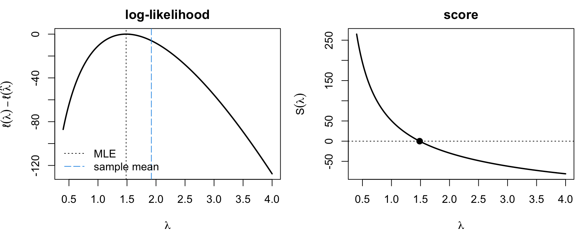
The plain sample mean overestimates \lambda because the zeros are missing; the MLE sits where the score crosses zero.
Fixed-Point Iteration: Two Rearrangements
The score equation S(\lambda) = 0 can be written as \frac{\overline x}{\lambda} = \frac{1}{1 - e^{-\lambda}} .
Solving for the \lambda on the left gives one rearrangement; solving for the exponential gives another: \lambda = \overline x\,(1 - e^{-\lambda}) =: g_1(\lambda), \qquad \lambda = -\log\!\Big(1 - \frac{\lambda}{\overline x}\Big) =: g_2(\lambda) .
Both have exactly the same fixed points, \hat\lambda and the spurious root \lambda = 0, and indeed g_2 = g_1^{-1}.
Fixed-Point Iteration: The Method
Pick a rearrangement \lambda = g(\lambda) and iterate \lambda_{k+1} = g(\lambda_k), \qquad k = 0, 1, 2, \ldots
Writing e_k = \lambda_k - \lambda^* and expanding g about the fixed point, e_{k+1} \approx g'(\lambda^*) e_k:
- the iteration converges to \lambda^* when |g'(\lambda^*)| < 1, and the error then shrinks by that constant factor each step — linear convergence;
- it is repelled from \lambda^* when |g'(\lambda^*)| > 1.
Here g_1'(\lambda) = \overline x\, e^{-\lambda} and g_2'(\lambda) = (\overline x - \lambda)^{-1}. Since g_2 = g_1^{-1}, the slopes are reciprocal at every fixed point, so at most one of the two rearrangements can converge to \hat\lambda.
Code
root iter
1.485204 22.000000 g1_slope g2_slope
0.4347956 2.2999312 Advantage: no derivatives. Disadvantage: a suitable g must be found, and the rearrangement alone decides the outcome.
Fixed-Point: The Cobweb
Code
cobweb <- function(g, x0, nstep, main) {
gg <- seq(0.05, 1.9, length.out = 300)
plot(gg, g(gg), type = "l", lwd = 2, xlim = c(0, 1.9), ylim = c(0, 1.9),
xlab = TeX("$\\lambda_k$"), ylab = TeX("$g(\\lambda_k)$"), main = main)
abline(0, 1, lty = 2); points(lhat, lhat, pch = 19, cex = 1.3)
for (k in 1:nstep) {
x1 <- g(x0); if (!is.finite(x1) || x1 < 0) break
segments(x0, x0, x0, x1, col = 2, lwd = 2) # up (or down) to the curve
segments(x0, x1, x1, x1, col = 2, lwd = 2) # across to the diagonal
points(x0, x1, pch = 19, col = 2, cex = 0.8)
x0 <- x1
}
}
par(mfrow = c(1, 2), mar = c(4.2, 4.2, 2.4, 1))
cobweb(g1, x0 = 1.85, nstep = 6, main = TeX("$g_1$: converges, $|g_1'| < 1$"))
cobweb(g2, x0 = 1.40, nstep = 6, main = TeX("$g_2$: repelled, $|g_2'| > 1$"))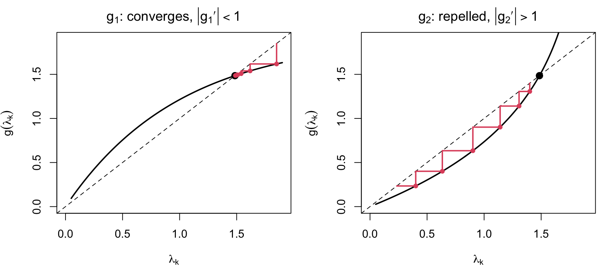
The staircase walks to the intersection of g with the 45^\circ line. For g_1 the crossing is shallow and each step strides toward it; g_2 is the inverse map, its slope there is the reciprocal, and the iterates are pushed away from \hat\lambda toward the fixed point at \lambda = 0.
Fixed-Point: Traces of the Iterates
Code
trace_fp <- function(g, x0, nstep) {
p <- x0
for (k in 1:nstep) {
xn <- g(p[k])
if (!is.finite(xn) || xn <= 0) break
p <- c(p, xn)
}
p
}
t1 <- trace_fp(g1, 1.85, 14); t2 <- trace_fp(g2, 1.40, 14)
par(mfrow = c(1, 2), mar = c(4.2, 4.4, 2.4, 1))
## (a) the iterates themselves
plot(seq_along(t1) - 1, t1, type = "b", pch = 19, lwd = 2, ylim = c(0, 2),
xlim = c(0, 14), xlab = "iteration $k$", ylab = TeX("$\\lambda_k$"), main = "traces")
lines(seq_along(t2) - 1, t2, type = "b", pch = 19, lwd = 2, col = 2)
abline(h = lhat, lty = 3); abline(h = 0, lty = 3)
mtext(TeX("$\\hat{\\lambda}$"), side = 4, at = lhat, las = 1, line = 0.3, cex = 0.9)
legend("topright", bty = "n", lwd = 2, pch = 19, col = c(1, 2),
legend = c(TeX("$g_1$"), TeX("$g_2$")))
## (b) the errors, on a log scale
e1 <- pmax(abs(t1 - lhat), 1e-16); e2 <- pmax(abs(t2 - lhat), 1e-16)
plot(seq_along(e1) - 1, e1, type = "b", pch = 19, lwd = 2, log = "y",
ylim = c(1e-10, 5), xlim = c(0, 14),
xlab = "iteration $k$", ylab = TeX("$|\\lambda_k - \\hat{\\lambda}|$"), main = "errors")
lines(seq_along(e2) - 1, e2, type = "b", pch = 19, lwd = 2, col = 2)
lines(0:14, e1[1] * (xbar * exp(-lhat))^(0:14), lty = 5, col = 4, lwd = 2)
legend("bottomleft", bty = "n", lwd = 2, lty = c(1, 1, 5), pch = c(19, 19, NA),
col = c(1, 2, 4), legend = c(TeX("$g_1$"), TeX("$g_2$"), TeX("rate $|g_1'(\\hat{\\lambda})|^k$")))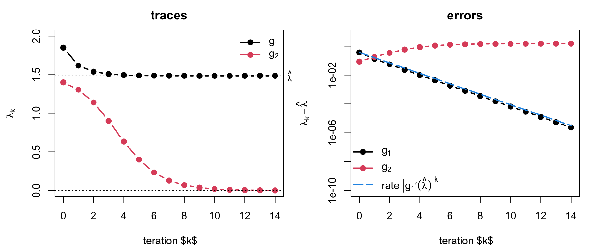
Left: g_1 settles onto \hat\lambda within a few steps, while g_2 slides past it and decays toward the spurious fixed point at zero. Right: the g_1 error falls along a straight line on the log scale, with the slope predicted by |g_1'(\hat\lambda)| — one fixed number of digits gained per iteration, against Newton’s doubling. The g_2 error rises and then flattens at \hat\lambda, the distance from the limit 0 to the root it failed to find.
Bisection
If S is continuous and S(a), S(b) have opposite signs, a root lies in [a, b]. Evaluate S at the midpoint and keep the half that still brackets the root.
Code
root iter
1.485204 30.000000 Guaranteed to converge; the bracket halves each step, so \log_2\big((b-a)/\text{tol}\big) \approx 30 iterations here.
Needs only S, not S'. R’s
uniroot()uses a refined version (Brent’s method).
Bisection, Visualized
Code
Sv <- S(lam); yr <- range(Sv); pad <- 0.35 * diff(yr)
plot(lam, Sv, type = "l", lwd = 2, ylim = c(yr[1], yr[2] + pad),
xlab = TeX("$\\lambda$"), ylab = TeX("$S(\\lambda)$"))
abline(h = 0, lty = 3); points(lhat, 0, pch = 19, cex = 1.3)
a <- 0.5; b <- 3.6
ylev <- seq(yr[2] + 0.08 * pad, yr[2] + 0.95 * pad, length.out = 4)
for (k in 1:4) {
m <- (a + b) / 2
segments(a, ylev[k], b, ylev[k], col = 4, lwd = 3) # the current bracket
points(c(a, b), rep(ylev[k], 2), pch = "|", col = 4)
segments(m, ylev[k], m, S(m), lty = 3, col = 2) # midpoint carried down to S
points(m, ylev[k], pch = 19, col = 2)
if (S(a) * S(m) <= 0) b <- m else a <- m
}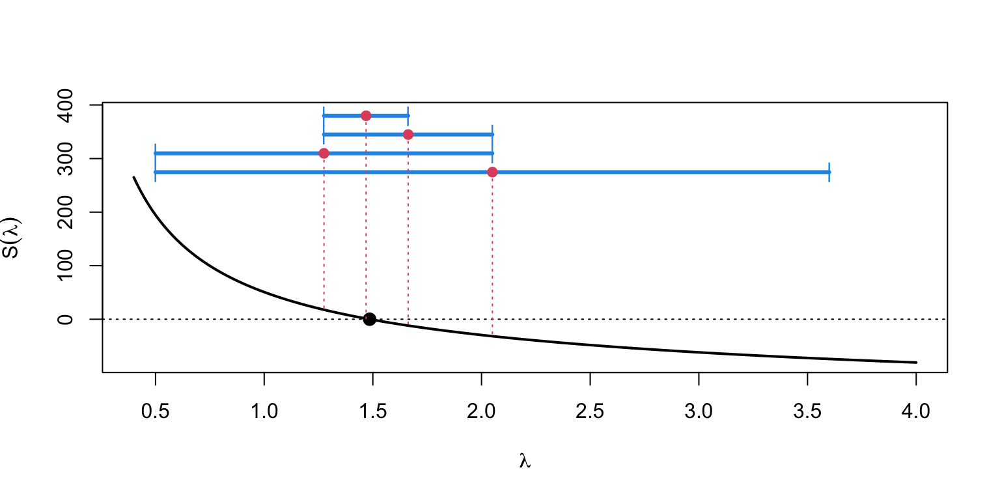
Each bar is the bracket at one iteration; the dot is its midpoint, mapped onto S to decide which half survives. The bracket halves every step regardless of the shape of S — no faster near the root than far from it.
Newton–Raphson: Derivation
Approximate the score by its tangent line at the current point \theta_k and solve for where the tangent hits zero: S(\theta) \approx S(\theta_k) + S'(\theta_k)(\theta - \theta_k) = 0 \quad\Longrightarrow\quad \theta_{k+1} = \theta_k - \frac{S(\theta_k)}{S'(\theta_k)} = \theta_k - \frac{\ell'(\theta_k)}{\ell''(\theta_k)} .
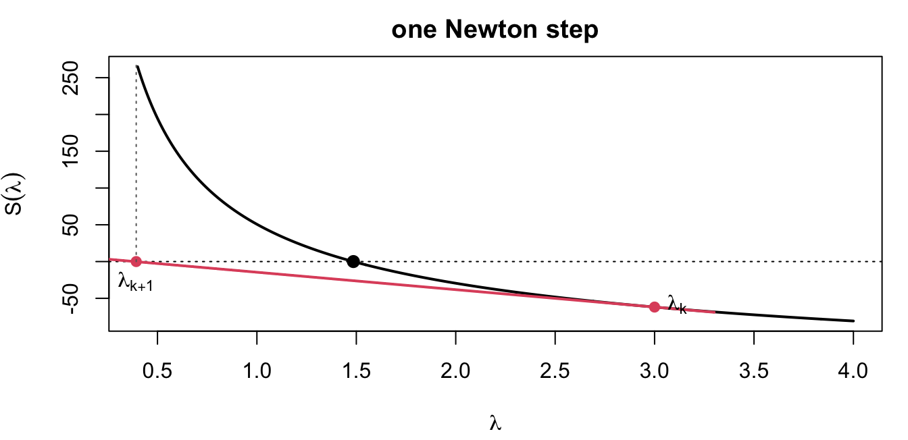
Newton–Raphson: The Tangent Steps
Code
it <- 0.5 # starting value
for (k in 1:3) it <- c(it, it[k] - S(it[k]) / dS(it[k]))
par(mfrow = c(1, 2), mar = c(4.2, 4.2, 2.4, 1))
## (a) tangents to the score
plot(lam, S(lam), type = "l", lwd = 2, main = "tangents to the score",
xlab = TeX("$\\lambda$"), ylab = TeX("$S(\\lambda)$"))
abline(h = 0, lty = 3); points(lhat, 0, pch = 19, cex = 1.2)
for (k in 1:3) {
xt <- range(c(it[k], it[k + 1])) + c(-0.15, 0.15)
lines(xt, S(it[k]) + dS(it[k]) * (xt - it[k]), col = 2, lwd = 2)
segments(it[k + 1], 0, it[k + 1], S(it[k + 1]), lty = 3, col = "grey40")
points(it[k], S(it[k]), pch = 19, col = 2, cex = 0.9)
mtext(TeX(sprintf("$\\lambda_%d$", k - 1)), side = 1, at = it[k], line = -1, col = 2, cex = 0.8)
}
## (b) the quadratic model that each step maximizes
llc <- function(l) ll(l) - ll(lhat)
plot(lam, llc(lam), type = "l", lwd = 2, main = "the quadratic model behind each step",
xlab = TeX("$\\lambda$"), ylab = TeX("$\\ell(\\lambda) - \\ell(\\hat{\\lambda})$"))
for (k in 1:3) {
w <- seq(it[k] - 1, it[k] + 1, length.out = 200)
lines(w, llc(it[k]) + S(it[k]) * (w - it[k]) + 0.5 * dS(it[k]) * (w - it[k])^2,
col = 2, lwd = 1.5, lty = 5)
segments(it[k + 1], par("usr")[3], it[k + 1], llc(it[k + 1]), lty = 3, col = "grey40")
points(it[k], llc(it[k]), pch = 19, col = 2, cex = 0.9)
}
points(lhat, 0, pch = 19, cex = 1.2)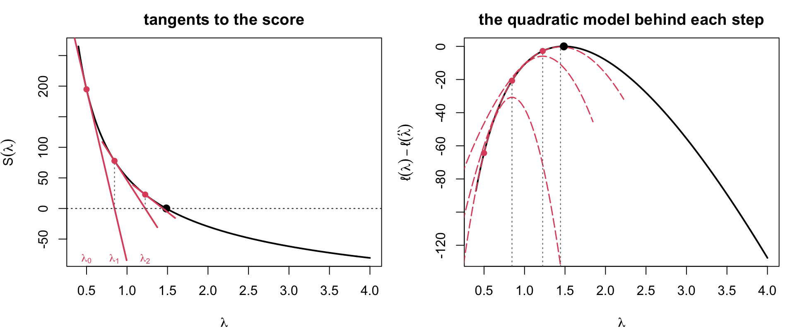
Left: each red line is the tangent to S at the current iterate, followed down to the axis to give the next one. Right: the same steps seen on \ell — the dashed parabola is the second-order Taylor expansion at \lambda_k, and \lambda_{k+1} is its vertex. As the iterates approach \hat\lambda the parabola hugs the log-likelihood and the vertex lands essentially on the MLE.
Newton–Raphson in R
Code
newton <- function(S, dS, x0, tol = 1e-8, maxit = 100, trace = FALSE) {
for (k in 1:maxit) {
x1 <- x0 - S(x0) / dS(x0)
if (trace) cat(sprintf("iter %2d: %.10f\n", k, x1))
if (!is.finite(x1)) stop("diverged")
if (abs(x1 - x0) < tol) return(c(root = x1, iter = k))
x0 <- x1 }
stop("not converged")
}
newton(S, dS, x0 = xbar, trace = TRUE)iter 1: 1.3823529274
iter 2: 1.4789563015
iter 3: 1.4851816577
iter 4: 1.4852043771
iter 5: 1.4852043774 root iter
1.485204 5.000000 Iteration counts on the same problem: fixed point 22, bisection 30, golden 40, Newton 5.
Convergence Rate of Newton–Raphson
Let e_k = \theta_k - \hat\theta. Expanding S(\hat\theta) = 0 around \theta_k: 0 = S(\theta_k) - S'(\theta_k)e_k + \tfrac12 S''(\xi)e_k^2 \quad\Longrightarrow\quad e_{k+1} = e_k - \frac{S(\theta_k)}{S'(\theta_k)} = \frac{S''(\xi)}{2S'(\theta_k)}\,e_k^2 .
Quadratic convergence: the error is squared each step, so the number of correct digits roughly doubles. Linear methods gain a fixed number of digits per step.
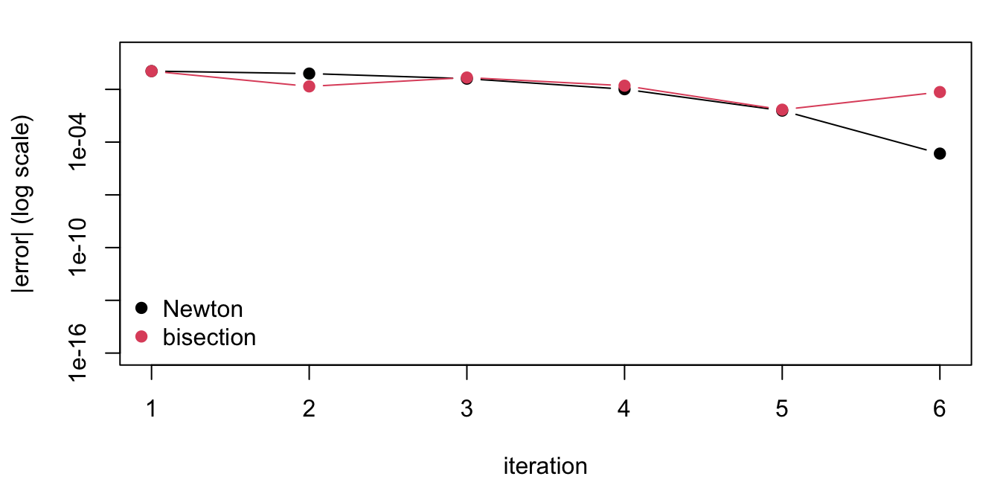
When Newton–Raphson Fails
Newton uses only local information, so it can misbehave:
- Wrong curvature: if \ell''(\theta_k) > 0, the step moves toward a minimum or diverges.
- Overshooting: a flat score (S'(\theta_k) \approx 0) gives a huge step.
- Multiple roots: it converges to whichever root is nearest the start, possibly a local maximum.
The truncated Poisson overshoots from a poor start: at \lambda_0 = 3.5 the score is already flat, so the tangent crosses zero outside the parameter space.
Code
l0 <- 3.5; l_nr <- l0 - S(l0) / dS(l0)
par(mar = c(4.2, 4.2, 1.5, 1))
plot(NA, xlim = c(-0.8, 4), ylim = range(S(lam)),
xlab = TeX("$\\lambda$"), ylab = TeX("$S(\\lambda)$"))
rect(-0.8, par("usr")[3], 0, par("usr")[4], col = "grey90", border = NA)
text(-0.4, 0.55 * par("usr")[4], TeX("$\\lambda < 0$"), col = "grey30", cex = 0.9)
lines(lam, S(lam), lwd = 2); abline(h = 0, lty = 3); points(lhat, 0, pch = 19, cex = 1.2)
xt <- c(l_nr - 0.2, l0 + 0.3)
lines(xt, S(l0) + dS(l0) * (xt - l0), col = 2, lwd = 2)
points(c(l0, l_nr), c(S(l0), 0), pch = 19, col = 2)
mtext(TeX("$\\lambda_0$"), side = 1, at = l0, line = -1, col = 2, cex = 0.9)
mtext(TeX("$\\lambda_1$"), side = 1, at = l_nr, line = -1, col = 2, cex = 0.9)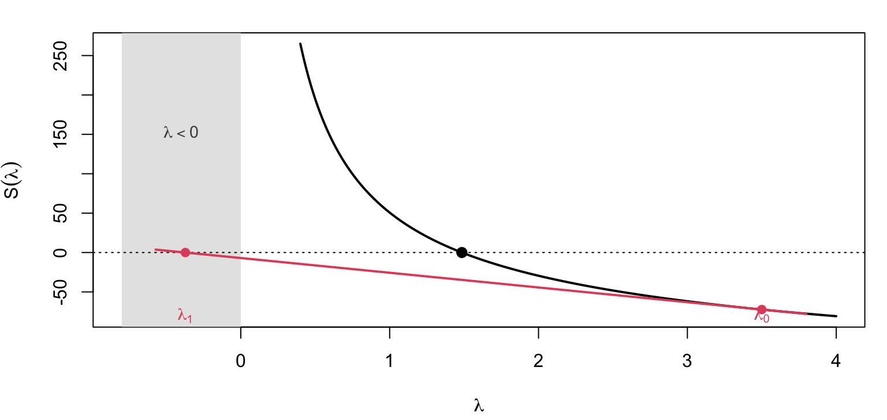
lambda_1
-0.3720692 [1] "diverged"Safeguards: start from a robust estimate, halve the step until \ell increases, or fall back to bisection/golden section, which only need a bracket.
Flat Tails: The Cauchy Location Model
A single-observation Cauchy likelihood shows the same failure in pure form: f(\theta) = -\ell(\theta) = \log(1+\theta^2) has derivative s(\theta) = 2\theta/(1+\theta^2), which rises, turns over at \theta = 1, then decays — the Newton step blows up wherever s is flat.
Code
lik <- function(t) log(1 + t^2)
sder <- function(t) 2 * t / (1 + t^2)
par(mfrow = c(1, 2), mar = c(4.2, 4.2, 2.2, 1))
curve(lik, -5, 5, n = 400, lwd = 2, xlab = TeX("$\\theta$"), main = "negative log-likelihood")
curve(sder, -5, 5, n = 400, lwd = 2, xlab = TeX("$\\theta$"), main = "derivative: flat tails")
abline(h = 0, lty = 3); abline(v = c(-1, 1), col = 2, lty = 2)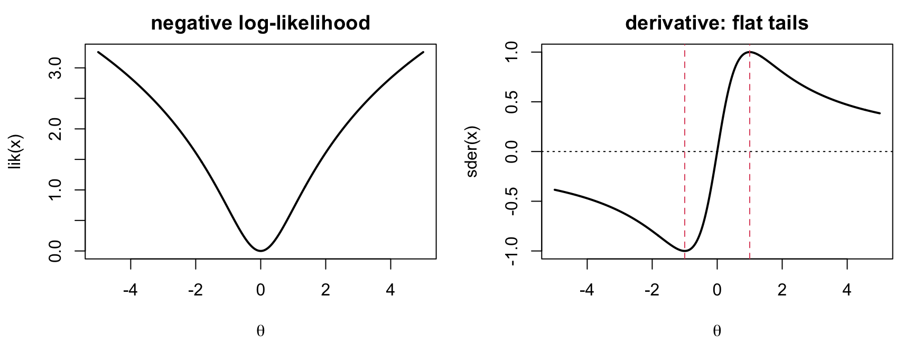
From \theta_0 = 0.5 Newton converges quadratically; from \theta_0 = 1.2, beyond the inflection point, it runs away — each step landing where the derivative is flatter still.
Code
[1] NA NA NA NAUnivariate Fisher Scoring
Replace the observed curvature -\ell''(\theta_k) by its expectation nI(\theta_k): \theta_{k+1} = \theta_k + \frac{S(\theta_k)}{n I(\theta_k)} .
- nI(\theta) > 0 always, so the step is always in an ascent direction — more robust than Newton far from the optimum.
- Near the MLE nI(\hat\theta) \approx -\ell''(\hat\theta), so the two methods behave alike.
- Requires the expectation in closed form.
Code
root iter
newton 1.485204 8
scoring 1.485204 5Newton vs. Scoring from the Same Point
Code
par(mfrow = c(1, 2), mar = c(4.2, 4.2, 2.4, 1))
## (a) the two lines from the bad start
l_fs <- l0 + S(l0) / nI(l0)
plot(NA, xlim = c(-0.8, 4), ylim = range(S(lam)), main = "observed vs. expected curvature",
xlab = TeX("$\\lambda$"), ylab = TeX("$S(\\lambda)$"))
rect(-0.8, par("usr")[3], 0, par("usr")[4], col = "grey90", border = NA)
lines(lam, S(lam), lwd = 2); abline(h = 0, lty = 3); points(lhat, 0, pch = 19, cex = 1.2)
xn <- c(l_nr - 0.2, l0 + 0.3); xf <- c(l_fs - 0.3, l0 + 0.3)
lines(xn, S(l0) + dS(l0) * (xn - l0), col = 2, lwd = 2)
lines(xf, S(l0) - nI(l0) * (xf - l0), col = 4, lwd = 2, lty = 5)
points(c(l0, l_nr, l_fs), c(S(l0), 0, 0), pch = 19, col = c(1, 2, 4))
legend("topright", bty = "n", lwd = 2, lty = c(1, 5), col = c(2, 4),
legend = c(TeX("Newton: slope $S'$"), TeX("scoring: slope $-nI$")))
## (b) the scoring path from the same start
plot(lam, S(lam), type = "l", lwd = 2, main = "scoring converges from the bad start",
xlab = TeX("$\\lambda$"), ylab = TeX("$S(\\lambda)$"))
abline(h = 0, lty = 3); points(lhat, 0, pch = 19, cex = 1.2)
fs <- l0
for (k in 1:4) fs <- c(fs, fs[k] + S(fs[k]) / nI(fs[k]))
for (k in 1:4) {
xt <- range(c(fs[k], fs[k + 1])) + c(-0.1, 0.1)
lines(xt, S(fs[k]) - nI(fs[k]) * (xt - fs[k]), col = 4, lwd = 1.8, lty = 5)
segments(fs[k + 1], 0, fs[k + 1], S(fs[k + 1]), lty = 3, col = "grey40")
points(fs[k], S(fs[k]), pch = 19, col = 4, cex = 0.9)
}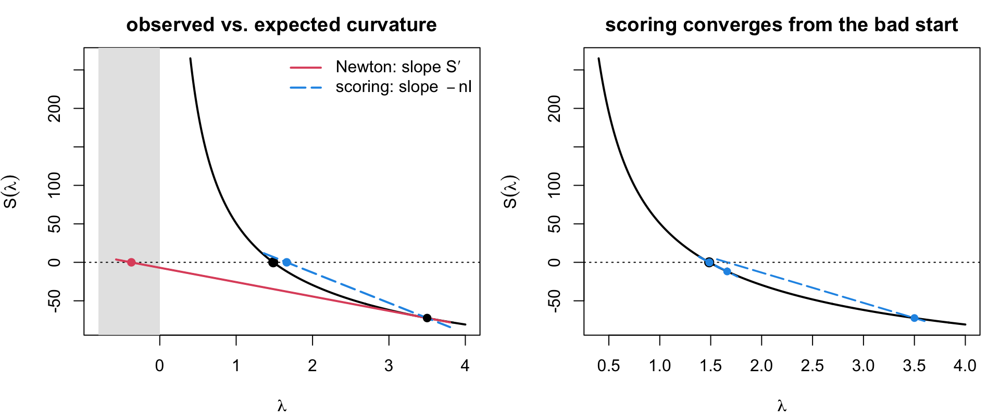
The two lines pass through the same point with different slopes. Newton uses the actual slope S'(\lambda_0), which is nearly flat here and throws the iterate out of the parameter space; scoring uses -nI(\lambda_0), an average over hypothetical data, which stays steep and negative and keeps every iterate positive. The slopes agree as \lambda_k \to \hat\lambda, so the two methods finish at the same speed.
Golden Section Search
Works on f(\theta) = -\ell(\theta) directly, without any derivative: keep a bracket [a, b] containing the minimum of a unimodal f and two interior points a' < b' placed at the golden ratio (\phi \approx 0.618).
- If f(a') < f(b') the minimum is in [a, b']; otherwise in [a', b].
- The golden placement lets the surviving interior point be reused, so each step costs one new evaluation and shrinks the bracket by 0.618.
Code
golden <- function(f, a, b, tol = 1e-8) {
phi <- (sqrt(5) - 1) / 2; k <- 0
x1 <- b - phi * (b - a); x2 <- a + phi * (b - a); f1 <- f(x1); f2 <- f(x2)
while (b - a > tol) {
if (f1 < f2) { b <- x2; x2 <- x1; f2 <- f1; x1 <- b - phi * (b - a); f1 <- f(x1) }
else { a <- x1; x1 <- x2; f1 <- f2; x2 <- a + phi * (b - a); f2 <- f(x2) }
k <- k + 1 }
c(root = (a + b) / 2, iter = k)
}
golden(function(l) -ll(l), 0.1, 10) # R equivalent: optimize(function(l) -ll(l), c(0.1, 10)) root iter
1.485204 44.000000 Golden Section, Visualized
Code
f <- function(l) -ll(l)
fv <- f(lam); yr <- range(fv); pad <- 0.3 * diff(yr)
plot(lam, fv, type = "l", lwd = 2, ylim = c(yr[1], yr[2] + pad),
xlab = TeX("$\\lambda$"), ylab = TeX("$-\\ell(\\lambda)$"))
points(lhat, f(lhat), pch = 19, cex = 1.3)
gr <- (3 - sqrt(5)) / 2; xl <- 0.5; xu <- 3.6
ylev <- seq(yr[2] + 0.08 * pad, yr[2] + 0.95 * pad, length.out = 3)
for (k in 1:3) {
xml <- xl + gr * (xu - xl); xmu <- xu - gr * (xu - xl)
segments(xl, ylev[k], xu, ylev[k], col = 4, lwd = 3)
points(c(xl, xu), rep(ylev[k], 2), pch = "|", col = 4)
keep_lower <- f(xml) < f(xmu)
points(xml, ylev[k], pch = 19, cex = 0.9, col = if (keep_lower) 4 else 2)
points(xmu, ylev[k], pch = 19, cex = 0.9, col = if (keep_lower) 2 else 4)
if (keep_lower) xu <- xmu else xl <- xml
}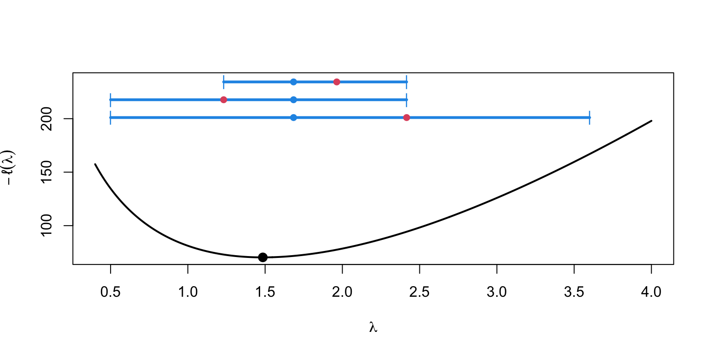
The point that survives (blue) is already correctly placed for the next iteration, so only the red point costs a fresh evaluation.
Standard Error from the Curvature
At the MLE \hat\lambda, the observed information J(\hat\lambda) = -\ell''(\hat\lambda) = -S'(\hat\lambda) and the expected information nI(\hat\lambda) both estimate the precision:
Numerical Derivatives
When S or S' is tedious to derive, approximate by finite differences: \ell'(\theta) \approx \frac{\ell(\theta + h) - \ell(\theta - h)}{2h}, \qquad \ell''(\theta) \approx \frac{\ell(\theta + h) - 2\ell(\theta) + \ell(\theta - h)}{h^2}.
h too large: truncation error; h too small: roundoff error (large − large). Typical choice h \approx \sqrt{\epsilon}\,(1 + \lvert\theta\rvert) \approx 10^{-8} for the first derivative, \epsilon^{1/3} for the second.
R’s
nlm()andoptim(method = "BFGS")use numerical gradients unless you supply analytic ones;numDeriv::grad()andhessian()are more accurate.
Does the Effort Pay Off? MLE vs. the Naive Estimator
Simulating many truncated samples shows the naive estimator’s bias never vanishes — it is the wrong model, not too little data — while the MLE is centred on the truth.
Code
mle_nzp <- function(n_obs)
uniroot(function(l) sum(n_obs) / l - length(n_obs) / (1 - exp(-l)),
c(1e-6, 50), tol = 1e-10)$root
sim_nzp <- function(lambda, n_gen = 200, B = 500)
vapply(1:B, function(b) {
yb <- rpois(n_gen, lambda); nb <- yb[yb > 0]
c(naive = mean(nb), mle = mle_nzp(nb))
}, c(naive = 0, mle = 0))
est <- sim_nzp(1.5)
par(mfrow = c(1, 2), mar = c(4.2, 4.2, 2.2, 1))
for (m in c("naive", "mle"))
{ hist(est[m, ], breaks = 25, col = "grey90", xlim = range(est),
xlab = TeX("$\\hat{\\lambda}$"),
main = sprintf("%s, bias = %.3f", m, mean(est[m, ]) - 1.5))
abline(v = 1.5, col = 2, lwd = 2, lty = 2) }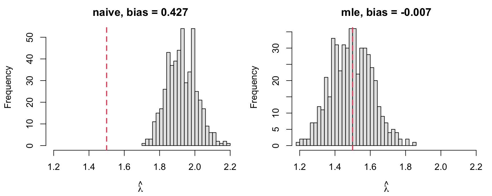
The naive estimator’s bias grows as \lambda shrinks, since more mass sits on the discarded zero; the MLE’s spread matches the information-based standard error from two slides ago.
3 Multivariate Newton–Raphson and Fisher Scoring
Gradient and Hessian
For \theta = (\theta_1, \ldots, \theta_p)', the gradient (score vector) and Hessian are \nabla\ell(\theta) = \begin{pmatrix}\partial\ell/\partial\theta_1 \\ \vdots \\ \partial\ell/\partial\theta_p\end{pmatrix}, \qquad \nabla^2\ell(\theta) = \left(\frac{\partial^2\ell}{\partial\theta_i\,\partial\theta_j}\right)_{p\times p} .
\nabla\ell points in the direction of steepest ascent and is perpendicular to the contour through \theta.
\nabla^2\ell describes the local curvature. At a local maximum it is negative semidefinite; if it is negative definite, the maximum is strict and locally unique. Near a maximum, \ell is well approximated by a quadratic, so the Hessian determines the shape of the contours.
Gradient and Hessian: Illustration
Quadratic: \ell(\theta) = -\tfrac12(\theta - u)'A(\theta - u), A positive definite, \nabla\ell = -A(\theta - u), \nabla^2\ell = -A (constant). Contours are ellipses centred at u. Write A = Q\Lambda Q':
- axes point along the eigenvectors of Q;
- half-length along axis j is \propto 1/\sqrt{\lambda_j}, so a large eigenvalue means high curvature and a short, well-determined direction;
- \lambda_{\max}/\lambda_{\min} measures elongation; tilted ellipses indicate correlated parameters.
- Gradient arrows (green) are perpendicular to contours and point uphill, but not toward u unless the ellipse is a circle.
- Near its maximum any smooth \ell looks like this, with A = -\nabla^2\ell(\hat\theta).

Multivariate Newton–Raphson
Second-order Taylor expansion at \theta_k, maximized exactly: \ell(\theta) \approx \ell(\theta_k) + \nabla\ell(\theta_k)'(\theta - \theta_k) + \tfrac12(\theta - \theta_k)'\nabla^2\ell(\theta_k)(\theta - \theta_k) \Longrightarrow\quad \underbrace{\theta_{k+1}}_{p\times1} = \theta_k - \underbrace{\big[\nabla^2\ell(\theta_k)\big]^{-1}}_{p\times p}\underbrace{\nabla\ell(\theta_k)}_{p\times1}.
Compare with the univariate \theta_{k+1} = \theta_k - \ell'(\theta_k)/\ell''(\theta_k): division becomes multiplication by the inverse Hessian.
Fisher scoring replaces -\nabla^2\ell(\theta_k) by the expected information nI(\theta_k): \theta_{k+1} = \theta_k + \big[nI(\theta_k)\big]^{-1}\nabla\ell(\theta_k).
Each iteration costs one p \times p linear solve — O(p^3) — fine for p in the hundreds, expensive for p in the millions.
Example: Logistic Regression
y_i \mid x_i \sim \mathrm{Bern}(\pi_i) with \pi_i = \dfrac{e^{\eta_i}}{1 + e^{\eta_i}} = \dfrac{1}{1 + e^{-\eta_i}}, \eta_i = x_i'\beta, x_i = (1, x_{i1}, \ldots, x_{ip})'. L(\beta) = \prod_{i=1}^n \pi_i^{y_i}(1-\pi_i)^{1-y_i} = \prod_{i=1}^n \frac{e^{y_i\eta_i}}{1 + e^{\eta_i}} \ell(\beta) = \sum_{i=1}^n \big[y_i\,x_i'\beta - \log(1 + e^{x_i'\beta})\big].
Using \dfrac{\partial}{\partial\beta}\log(1 + e^{x_i'\beta}) = \pi_i x_i and \dfrac{\partial\pi_i}{\partial\beta} = \pi_i(1-\pi_i)x_i: \nabla\ell(\beta) = \sum_{i=1}^n (y_i - \pi_i)\,x_i = X'(y - \pi), \qquad \nabla^2\ell(\beta) = -\sum_{i=1}^n \pi_i(1-\pi_i)\,x_i x_i' = -X'WX, \text{with}~W = \mathrm{diag}\big(\pi_i(1-\pi_i)\big) .
Logistic Regression: Newton = Fisher Scoring = IRLS
-\nabla^2\ell = X'WX is positive semi-definite, so \ell is concave: any stationary point is the global maximum.
The Hessian does not involve y, so its expectation equals itself: Newton–Raphson and Fisher scoring coincide.
The update \beta_{k+1} = \beta_k + (X'W_kX)^{-1}X'(y - \pi_k) = (X'W_kX)^{-1}X'W_k z_k, z_k = X\beta_k + W_k^{-1}(y - \pi_k), is a weighted least squares fit of the working response z_k: iteratively reweighted least squares (IRLS), which is how
glm()fits all generalized linear models.Caveat: if the classes are perfectly separable, \ell increases forever and the MLE does not exist (\lvert\hat\beta\rvert \to \infty).
Logistic Regression in R
Code
n <- 500; X <- cbind(1, rnorm(n), rnorm(n)); beta_true <- c(-0.5, 1, -2)
y <- rbinom(n, 1, plogis(X %*% beta_true))
loglik <- function(b) sum(y * (X %*% b) - log1p(exp(X %*% b)))
grad <- function(b) crossprod(X, y - plogis(X %*% b))
hess <- function(b) { p <- plogis(X %*% b); -crossprod(X, X * drop(p * (1 - p))) }
newton_mv <- function(grad, hess, b0, tol = 1e-8, maxit = 50) {
path <- drop(b0)
for (k in 1:maxit) {
b1 <- b0 - solve(hess(b0), grad(b0)); path <- rbind(path, drop(b1))
if (max(abs(b1 - b0)) < tol)
return(list(est = drop(b1), iter = k, se = sqrt(diag(solve(-hess(b1)))), path = path))
b0 <- b1 }
}
fit <- newton_mv(grad, hess, rep(0, 3)); fit$iter[1] 7 (Intercept) X[, -1]1 X[, -1]2
newton -0.5956291 0.8618954 -1.840956
glm -0.5956291 0.8618954 -1.840956 (Intercept) X[, -1]1 X[, -1]2
newton 0.1216455 0.1298958 0.1790956
glm 0.1216448 0.1298948 0.1790936Variance of the MLE \hat\beta
\widehat{\mathrm{Var}}(\hat\beta) = \big[-\nabla^2\ell(\hat\beta)\big]^{-1} = (X'\hat WX)^{-1} = \begin{pmatrix}\hat\sigma_{00} & \cdots & \hat\sigma_{0p} \\ \vdots & \ddots & \vdots \\ \hat\sigma_{p0} & \cdots & \hat\sigma_{pp}\end{pmatrix}, \widehat{\mathrm{SE}}(\hat\beta_j) = \sqrt{\hat\sigma_{jj}} .
Wald tests and confidence intervals follow directly: z_j = \frac{\hat\beta_j}{\widehat{\mathrm{SE}}(\hat\beta_j)} \;\dot\sim\; N(0,1) \text{ under } H_0: \beta_j = 0, \qquad \hat\beta_j \pm 1.96\,\widehat{\mathrm{SE}}(\hat\beta_j).
This is the summary(glm(...)) table. The variance comes from the same Hessian that drove the Newton iterations.
The Need to Robustify Newton–Raphson
The Newton step d_k = -H_k^{-1} g_k, with g_k = \nabla f(x_k) and H_k = \nabla^2 f(x_k), solves the local quadratic model exactly. Two things can go wrong away from the solution:
- The direction may not descend. g_k^\top d_k = -g_k^\top H_k^{-1} g_k < 0 requires H_k \succ 0. Where f is not convex, H_k may be indefinite or singular and d_k can point uphill.
- The unit step may overshoot. Even with H_k \succ 0, the quadratic model is trustworthy only near x_k; \alpha_k = 1 can increase f.
The two failures are independent and need separate remedies: one fixes the direction, the other the length.
Robustification of the Hessian
Replace H_k by a positive definite \tilde H_k and solve \tilde H_k d_k = -g_k.
Shift by a multiple of the identity. With \lambda_{\min} the smallest eigenvalue of H_k, \tilde H_k = H_k + \tau I, \qquad \tau = \max\left(0,\; \delta - \lambda_{\min}\right), \qquad \delta = 10^{-3}\lambda_{\max} . Eigenvectors are unchanged and every eigenvalue is shifted by \tau. As \tau \to \infty the direction rotates toward -g_k, so the method interpolates between Newton and steepest descent.
Spectral modification. With H_k = V \Lambda V^\top, replace \lambda_i by \max(|\lambda_i|, \delta). This reverses negative-curvature directions rather than damping them, so the step moves away from a saddle.
Where H_k \succ 0 already, \tau = 0 and \tilde H_k = H_k: the refinement is inactive near a well-behaved minimum.
Step length: backtracking and line search
Given a descent direction, choose \alpha_k by an inexact search along \phi(\alpha) = f(x_k + \alpha d_k).
Armijo (sufficient decrease). f(x_k + \alpha d_k) \le f(x_k) + c_1 \alpha\, g_k^\top d_k, \qquad c_1 = 10^{-4}.
Backtracking. Start at \alpha = 1 and set \alpha \leftarrow \rho\alpha with \rho = \tfrac12 until Armijo holds. Simple, and it accepts \alpha_k = 1 whenever the full Newton step is acceptable.
Curvature (Wolfe) condition. g(x_k + \alpha d_k)^\top d_k \ \ge\ c_2\, g_k^\top d_k, \qquad c_2 = 0.9, which rules out steps that are too short. Backtracking alone cannot enforce it, since it never lengthens the trial step. The condition matters for conjugate gradient and is what keeps s_k^\top y_k > 0, hence the BFGS update well defined.
The safeguarded algorithm
At x_k: compute g_k, H_k; form \tilde H_k \succ 0; solve \tilde H_k d_k = -g_k; find \alpha_k from \alpha_0 = 1 by line search; set x_{k+1} = x_k + \alpha_k d_k.
Both safeguards are needed, and both switch themselves off:
| near a minimum | far away / indefinite | |
|---|---|---|
| \tau | 0 | > 0, direction rotates toward -g_k |
| \alpha_k | 1 | < 1 (or > 1 under Wolfe) |
Quadratic convergence is therefore retained locally, while sufficient decrease at every iteration gives convergence from remote starting points. This is safeguarded Newton, not “Newton–Raphson” in the textbook sense — and not what nlm() runs, which globalizes with a trust region.
4 Gradient-based Methods
What If the Hessian Is Unavailable or Too Big?
| method | uses | per-iteration cost | typical use |
|---|---|---|---|
| Nelder–Mead | f only | O(p) evaluations | small p, non-smooth or noisy f |
| gradient descent + line search | \nabla f | O(p) + line search | large p |
| conjugate gradient | \nabla f | O(p) + line search | large p, quadratic-like f |
| quasi-Newton (BFGS, L-BFGS) | \nabla f, builds \approx Hessian | O(p^2) / O(mp) | default general-purpose |
| Newton / Fisher scoring | \nabla f, \nabla^2 f | O(p^3) | moderate p, gives SEs |
All are available through optim(par, fn, gr, method = ...) in R. Convention below: minimize f(\theta) = -\ell(\theta).
Gradient Descent with Line Search
Move in the direction of steepest descent d_k = -\nabla f(\theta_k), choosing the step length \alpha_k by a line search: \theta_{k+1} = \theta_k + \alpha_k d_k, \qquad \alpha_k = \arg\min_{\alpha > 0} f(\theta_k + \alpha d_k) .
Exact line search: a univariate minimization (golden section /
optimize) along the ray.Inexact (backtracking, Armijo): start with \alpha = 1 and halve until f(\theta_k + \alpha d_k) \le f(\theta_k) + c\,\alpha\,\nabla f(\theta_k)'d_k (a “sufficient decrease”).
Code
grad_descent <- function(f, gr, x0, maxit = 1000, tol = 1e-8) {
path <- x0
for (k in 1:maxit) {
d <- -gr(x0); a <- optimize(function(a) f(x0 + a * d), c(0, 10))$minimum # exact line search
x1 <- x0 + a * d; path <- rbind(path, x1)
if (sqrt(sum((x1 - x0)^2)) < tol) break
x0 <- x1 }
list(par = x1, iter = k, path = path)
}Why Gradient Descent Zig-Zags
With exact line search, consecutive directions are orthogonal (\nabla f(\theta_{k+1})'d_k = 0), so on elongated contours the path zig-zags across the valley:

The number of iterations grows with the condition number of the Hessian (ratio of largest to smallest eigenvalue).
Conjugate Gradient
Fix the zig-zag by making each new direction conjugate to the previous ones with respect to the Hessian Q: d_i'Qd_j = 0 for i \ne j. For a quadratic f(\theta) = \tfrac12\theta'Q\theta - b'\theta, minimizing along p such directions reaches the exact minimum in at most p steps.
The nonlinear version builds directions from gradients only: d_0 = -g_0, \qquad d_{k+1} = -g_{k+1} + \beta_k d_k, \qquad \beta_k^{FR} = \frac{g_{k+1}'g_{k+1}}{g_k'g_k}\ \text{(Fletcher–Reeves)}, \quad \beta_k^{PR} = \frac{g_{k+1}'(g_{k+1} - g_k)}{g_k'g_k}\ \text{(Polak–Ribière)}, with \theta_{k+1} = \theta_k + \alpha_k d_k from a line search and g_k = \nabla f(\theta_k).
Memory: only two vectors. No matrix ever formed. Ideal for very large p.
Restart with d = -g every p iterations, since conjugacy degrades on non-quadratic f.
Conjugate Gradient in R
Code
conj_grad <- function(f, gr, x0, maxit = 1000, tol = 1e-8, restart = length(x0)) {
g0 <- gr(x0); d <- -g0; path <- x0
for (k in 1:maxit) {
a <- optimize(function(a) f(x0 + a * d), c(0, 10))$minimum
x1 <- x0 + a * d; g1 <- gr(x1); path <- rbind(path, x1)
if (sqrt(sum(g1^2)) < tol) break
beta <- if (k %% restart == 0) 0 else max(0, sum(g1 * (g1 - g0)) / sum(g0^2)) # Polak-Ribiere+
d <- -g1 + beta * d; x0 <- x1; g0 <- g1 }
list(par = x1, iter = k, path = path)
}
cg <- conj_grad(fq, gq, c(2, -1.8))
par(pty = "s", mar = c(4, 4, 2, 1)); contour(seq(-2, 2, l = 80), seq(-2, 2, l = 80), -z, nlevels = 15, main = sprintf("conjugate gradient, %d iterations", cg$iter))
lines(gd$path, type = "b", col = 2, pch = 19, cex = 0.6); lines(cg$path, type = "b", col = 4, pch = 19, lwd = 2)
legend("topleft", c("gradient descent", "conjugate gradient"), col = c(2, 4), lwd = 2, bty = "n")
Quasi-Newton: BFGS
Between gradient methods and Newton: build an approximation B_k \approx \nabla^2 f from successive gradient differences s_k = \theta_{k+1} - \theta_k, y_k = g_{k+1} - g_k, via a rank-two update that keeps B_k positive definite. Steps are d_k = -B_k^{-1}g_k with a line search.
Code
negll <- function(b) -loglik(b); neggr <- function(b) -drop(grad(b))
fits <- list(NM = optim(rep(0, 3), negll, method = "Nelder-Mead"),
CG = optim(rep(0, 3), negll, neggr, method = "CG"),
BFGS = optim(rep(0, 3), negll, neggr, method = "BFGS", hessian = TRUE))
t(sapply(fits, function(f) c(f$par, f_evals = f$counts[1], g_evals = f$counts[2]))) f_evals.function g_evals.gradient
NM -0.5958732 0.8617178 -1.841346 98 NA
CG -0.5956291 0.8618954 -1.840956 73 25
BFGS -0.5956291 0.8618954 -1.840956 35 13Code
[1] 0.1216455 0.1298958 0.1790956optim(..., hessian = TRUE) returns a finite-difference Hessian at the solution, so standard errors are available even for gradient-only methods.
Animation for Gradient-based Methods
#| '!! shinylive warning !!': |
#| shinylive does not work in self-contained HTML documents.
#| Please set `embed-resources: false` in your metadata.
#| standalone: true
#| viewerHeight: 820
library(shiny)
## ---------------------------------------------------------------- objectives
mk <- function(label, fv, xlim, ylim, start, xstar) {
force(fv)
list(label = label, fv = fv, f = function(p) fv(p[1], p[2]),
xlim = xlim, ylim = ylim, start = start,
xstar = matrix(xstar, ncol = 2))
}
FNS <- list(
quad = mk(
"(a) Well-conditioned quadratic",
function(x, y) 0.5 * (2 * (x - 1)^2 + 1.6 * (x - 1) * (y - 1) +
2 * (y - 1)^2),
c(-3, 4), c(-3, 4), c(-2, 3), c(1, 1)
),
banana = mk(
"(b) Rosenbrock banana (narrow curved ridge)",
function(x, y) (1 - x)^2 + 100 * (y - x^2)^2,
c(-2, 2), c(-1, 3), c(-1.2, 1), c(1, 1)
),
mix = mk(
"(c) Highly correlated, two modes",
function(x, y) {
rho <- 0.9; den <- 1 - rho^2
q <- function(u, v) (u^2 - 2 * rho * u * v + v^2) / den
-log(exp(-0.5 * q(x - 1.2, y - 1.2)) +
0.6 * exp(-0.5 * q(x + 1.5, y + 1.5) / 1.5) + 1e-12)
},
c(-4, 4), c(-4, 4), c(-3, -0.5), c(1.2, 1.2)
),
himmel = mk(
"(d) Himmelblau (four global minima)",
function(x, y) (x^2 + y - 11)^2 + (x + y^2 - 7)^2,
c(-5, 5), c(-5, 5), c(-4, 4),
rbind(c(3, 2), c(-2.805118, 3.131312),
c(-3.779310, -3.283186), c(3.584428, -1.848126))
),
beale = mk(
"(e) Beale (flat plateau, sharp valley)",
function(x, y) (1.5 - x + x * y)^2 + (2.25 - x + x * y^2)^2 +
(2.625 - x + x * y^3)^2,
c(-4.5, 4.5), c(-4.5, 4.5), c(-1, 1), c(3, 0.5)
),
rastrigin = mk(
"(f) Rastrigin (many local minima)",
function(x, y) 20 + x^2 - 10 * cos(2 * pi * x) +
y^2 - 10 * cos(2 * pi * y),
c(-5.12, 5.12), c(-5.12, 5.12), c(-3.1, 4.2), c(0, 0)
)
)
## ------------------------------------------------- numerical derivatives
num_grad <- function(f, x) {
h <- 1e-5 * (1 + abs(x))
g <- numeric(2)
for (i in 1:2) {
e <- numeric(2); e[i] <- h[i]
g[i] <- (f(x + e) - f(x - e)) / (2 * h[i])
}
g
}
num_hess <- function(f, x) {
h <- 1e-4 * (1 + abs(x))
H <- matrix(0, 2, 2)
for (i in 1:2) for (j in i:2) {
ei <- numeric(2); ei[i] <- h[i]
ej <- numeric(2); ej[j] <- h[j]
H[i, j] <- (f(x + ei + ej) - f(x + ei - ej) -
f(x - ei + ej) + f(x - ei - ej)) / (4 * h[i] * h[j])
H[j, i] <- H[i, j]
}
H
}
## --------------------------------------------------- Wolfe line search
line_search <- function(f, g, x, d, a0 = 1, c1 = 1e-4, c2 = 0.9) {
f0 <- f(x); gd0 <- sum(g * d)
if (!is.finite(gd0) || gd0 >= 0) return(list(alpha = 0, ok = FALSE))
lo <- 0; hi <- Inf; a <- a0
for (it in 1:60) {
fa <- f(x + a * d)
if (!is.finite(fa) || fa > f0 + c1 * a * gd0) {
hi <- a; a <- 0.5 * (lo + hi)
} else {
ga <- num_grad(f, x + a * d)
if (sum(ga * d) < c2 * gd0) {
lo <- a
a <- if (is.finite(hi)) 0.5 * (lo + hi) else min(2 * a, 1e4)
} else {
return(list(alpha = a, ok = TRUE))
}
}
if (a < 1e-14) return(list(alpha = 0, ok = FALSE))
}
list(alpha = a, ok = (a > 0))
}
## ------------------------------------------------------------- algorithms
run_alg <- function(alg, FN, x0, maxit = 60, tol = 1e-6) {
f <- FN$f
X <- matrix(NA_real_, maxit + 1, 2); G <- matrix(NA_real_, maxit + 1, 2)
D <- matrix(NA_real_, maxit + 1, 2); Fv <- rep(NA_real_, maxit + 1)
AL <- rep(NA_real_, maxit + 1)
x <- x0; B <- diag(2)
g_prev <- NULL; d_prev <- NULL; s_prev <- NULL
n <- 0; note <- "maximum number of iterations reached"
for (k in seq_len(maxit)) {
g <- num_grad(f, x); gn <- sqrt(sum(g^2))
X[k, ] <- x; G[k, ] <- g; Fv[k] <- f(x); n <- k
if (!is.finite(gn)) { note <- "diverged"; break }
if (gn < tol) { note <- "converged (||grad|| < 1e-6)"; break }
if (alg == "nr") {
H <- num_hess(f, x); H <- (H + t(H)) / 2
ev <- eigen(H, symmetric = TRUE, only.values = TRUE)$values
delta <- 1e-3 * max(1, max(abs(ev)))
tau <- max(0, delta - min(ev))
d <- tryCatch(solve(H + tau * diag(2), -g), error = function(e) -g)
} else if (alg == "gd") {
d <- -g
} else if (alg == "cg") {
if (is.null(d_prev)) {
d <- -g
} else {
y <- g - g_prev
beta <- max(0, sum(g * y) / max(sum(g_prev^2), 1e-300)) # PR+
d <- -g + beta * d_prev
}
if (sum(g * d) > -1e-12) d <- -g # restart
} else { # BFGS
if (!is.null(s_prev)) {
y <- g - g_prev; sy <- sum(s_prev * y)
if (sy > 1e-10) {
rho <- 1 / sy
V <- diag(2) - rho * outer(s_prev, y)
B <- V %*% B %*% t(V) + rho * outer(s_prev, s_prev)
}
}
d <- -as.vector(B %*% g)
if (sum(g * d) > -1e-12) { B <- diag(2); d <- -g }
}
ls <- line_search(f, g, x, d)
D[k, ] <- d; AL[k] <- ls$alpha
if (ls$alpha <= 0) { note <- "line search failed (flat or non-descent)"; break }
s_prev <- ls$alpha * d; g_prev <- g; d_prev <- d
x <- x + s_prev
}
list(X = X[1:n, , drop = FALSE], G = G[1:n, , drop = FALSE],
D = D[1:n, , drop = FALSE], F = Fv[1:n], A = AL[1:n],
n = n, note = note)
}
ALGS <- c("Safeguarded Newton (modified Hessian + line search)" = "nr",
"Gradient descent + line search" = "gd",
"Conjugate gradient (PR+)" = "cg",
"BFGS (quasi-Newton)" = "bfgs")
## ---------------------------- widen the data box to the device aspect ratio
expand_box <- function(xlim, ylim, pin) {
if (length(pin) != 2 || any(!is.finite(pin)) || any(pin <= 0))
return(list(xlim = xlim, ylim = ylim))
r <- pin[1] / pin[2]
wd <- diff(xlim); ht <- diff(ylim)
if (wd / ht < r) {
w <- ht * r; m <- mean(xlim); xlim <- m + c(-0.5, 0.5) * w
} else {
h <- wd / r; m <- mean(ylim); ylim <- m + c(-0.5, 0.5) * h
}
list(xlim = xlim, ylim = ylim)
}
## --------------------------------------------------------------------- UI
ui <- fluidPage(
fluidRow(
## ---- column 1: controls -------------------------------------------
column(
3,
selectInput("alg", "Algorithm", ALGS),
selectInput("fn", "Objective function",
setNames(names(FNS), sapply(FNS, `[[`, "label"))),
sliderInput("k", "Iteration k", min = 0, max = 1, value = 0, step = 1),
checkboxInput("showpath", "Show the whole path", TRUE),
htmlOutput("info")
),
## ---- column 2: playback -------------------------------------------
column(
2,
div(
style = "margin-top:26px;",
actionButton("play", "Play", class = "btn-primary btn-lg",
style = "width:100%; margin-bottom:10px;"),
actionButton("step", "Next", class = "btn-lg",
style = "width:100%; margin-bottom:10px;"),
actionButton("back", "Prev", class = "btn-lg",
style = "width:100%;"),
hr(),
checkboxInput("autoplay", "Autoplay on Changing Initial", TRUE),
actionButton("reset", "Reset initial",
style = "width:100%; margin-bottom:8px;"),
helpText("Click inside the contour plot to choose a new initial value.")
)
),
## ---- column 3: plots ----------------------------------------------
column(
7,
plotOutput("contour", click = "click", height = "540px"),
plotOutput("conv", height = "190px")
)
)
)
## ----------------------------------------------------------------- server
server <- function(input, output, session) {
FN <- reactive(FNS[[input$fn]])
start <- reactiveVal(FNS[[1]]$start)
playing <- reactiveVal(FALSE)
observeEvent(input$fn, start(FNS[[input$fn]]$start))
observeEvent(input$reset, start(FN()$start))
observeEvent(input$click, {
p <- c(input$click$x, input$click$y)
if (all(is.finite(p))) start(p)
})
path <- reactive({
req(start())
run_alg(input$alg, FN(), start())
})
observeEvent(path(), {
updateSliderInput(session, "k", max = max(1, path()$n - 1), value = 0)
playing(isTRUE(input$autoplay) && path()$n > 1)
})
observeEvent(input$play, {
if (isTRUE(playing())) {
playing(FALSE)
} else {
if (as.integer(input$k) >= path()$n - 1)
updateSliderInput(session, "k", value = 0)
playing(TRUE)
}
})
observeEvent(playing(), {
updateActionButton(session, "play",
label = if (isTRUE(playing())) "Pause" else "Play")
})
observe({
if (!isTRUE(playing())) return()
kmax <- isolate(path()$n) - 1
k <- isolate(as.integer(input$k))
if (k >= kmax) { playing(FALSE); return() }
invalidateLater(900, session)
updateSliderInput(session, "k", value = k + 1)
})
observeEvent(input$step, {
playing(FALSE)
updateSliderInput(session, "k",
value = min(as.integer(input$k) + 1, max(0, path()$n - 1)))
})
observeEvent(input$back, {
playing(FALSE)
updateSliderInput(session, "k", value = max(as.integer(input$k) - 1, 0))
})
output$contour <- renderPlot({
FNc <- FN(); P <- path()
k <- min(as.integer(input$k), P$n - 1) + 1L
par(mar = c(4, 4, 2.5, 1))
plot.new()
bx <- expand_box(FNc$xlim, FNc$ylim, par("pin"))
plot.window(xlim = bx$xlim, ylim = bx$ylim, xaxs = "i", yaxs = "i")
xs <- seq(bx$xlim[1], bx$xlim[2], length.out = 180)
ys <- seq(bx$ylim[1], bx$ylim[2], length.out = 180)
z <- outer(xs, ys, FNc$fv)
zf <- z[is.finite(z)]
lv <- unique(quantile(zf, probs = seq(0, 1, length.out = 30)^1.7))
zr <- matrix(rank(z, na.last = "keep", ties.method = "average"),
nrow = length(xs))
image(xs, ys, zr, add = TRUE,
col = colorRampPalette(c("#f7fbff", "#9ec4e3"))(128))
contour(xs, ys, z, levels = lv, add = TRUE,
col = "grey45", drawlabels = FALSE)
axis(1); axis(2); box()
title(main = paste0(names(ALGS)[ALGS == input$alg], " | ", FNc$label),
xlab = expression(x[1]), ylab = expression(x[2]), cex.main = 1.0)
points(FNc$xstar[, 1], FNc$xstar[, 2], pch = 8, col = "red",
cex = 1.3, lwd = 2)
if (isTRUE(input$showpath) && k > 1)
lines(P$X[1:k, 1], P$X[1:k, 2], col = "grey25", lty = 2)
points(P$X[1:k, 1], P$X[1:k, 2], pch = 20, col = "grey35", cex = 0.9)
xk <- P$X[k, ]; gk <- P$G[k, ]; gn <- sqrt(sum(gk^2))
L <- 0.09 * diff(bx$xlim) # fixed display length
if (gn > 0) {
u <- -gk / gn
arrows(xk[1], xk[2], xk[1] + L * u[1], xk[2] + L * u[2],
col = "grey45", lwd = 3, length = 0.10)
arrows(xk[1], xk[2], xk[1] - gk[1], xk[2] - gk[2],
col = "#E8820C", lwd = 3, length = 0.13)
}
if (k < P$n) {
arrows(xk[1], xk[2], P$X[k + 1, 1], P$X[k + 1, 2],
col = "#2E8B57", lwd = 3, length = 0.13)
points(P$X[k + 1, 1], P$X[k + 1, 2], pch = 21, bg = "white",
col = "#2E8B57", cex = 1.2)
}
points(xk[1], xk[2], pch = 19, col = "black", cex = 1.3)
legend("topleft", lwd = 3, cex = 0.9, bg = "#ffffffcc", box.col = NA,
col = c("grey45", "#E8820C", "#2E8B57"),
legend = c(expression(-nabla * f(x[k])~"(direction only)"),
expression(-nabla * f(x[k])~"(actual length)"),
expression(alpha[k] * d[k]~"(step taken)")))
})
output$conv <- renderPlot({
P <- path(); k <- min(as.integer(input$k), P$n - 1) + 1L
gn <- sqrt(rowSums(P$G^2))
gn[!is.finite(gn) | gn <= 0] <- NA
par(mar = c(4, 4.5, 1.5, 1))
plot(seq_len(P$n) - 1, gn, type = "b", pch = 20, log = "y",
xlab = "iteration k", ylab = expression("||" * nabla * f * "||"),
col = "grey40")
points(k - 1, gn[k], pch = 19, col = "#E8820C", cex = 1.6)
})
output$info <- renderUI({
P <- path(); k <- min(as.integer(input$k), P$n - 1) + 1L
xk <- P$X[k, ]; gk <- P$G[k, ]; gn <- sqrt(sum(gk^2))
ang <- NA
if (k < P$n) {
sk <- P$X[k + 1, ] - xk
cs <- sum(-gk * sk) / (gn * sqrt(sum(sk^2)))
ang <- acos(max(-1, min(1, cs))) * 180 / pi
}
fmt <- function(v, d = 4) formatC(v, format = "g", digits = d)
HTML(paste0(
"<hr><b>iteration</b> ", k - 1, " of ", P$n - 1, "<br>",
"<b>x<sub>k</sub></b> = (", fmt(xk[1]), ", ", fmt(xk[2]), ")<br>",
"<b>f(x<sub>k</sub>)</b> = ", fmt(P$F[k], 6), "<br>",
"<b>||grad||</b> = ", fmt(gn), "<br>",
"<b>step size α<sub>k</sub></b> = ",
if (k < P$n) fmt(P$A[k]) else "–", "<br>",
"<b>angle(grey, green)</b> = ",
if (is.na(ang)) "–" else paste0(fmt(ang, 3), "°"),
"<br><br><i>", P$note, "</i>"
))
})
}
shinyApp(ui, server)5 Nelder–Mead (Simplex Method)
Maintains a simplex of p+1 points (a triangle in 2D) and moves it downhill using only function values:
Order the vertices f(\theta_{(1)}) \le \cdots \le f(\theta_{(p+1)}); let \overline\theta be the centroid of the best p.
Reflect the worst vertex through \overline\theta; if the reflected point is the new best, try expanding further.
If reflection is poor, contract toward \overline\theta; if that also fails, shrink all vertices toward the best.
Code
evals.function
1.000260 1.000506 195.000000 Robust and derivative-free (R’s optim default), but slow in high dimensions and offers no standard errors.
Nelder–Mead: The Simplex Moves
Golden section needs a bracket, which exists only in one dimension. Nelder–Mead generalizes the idea: keep d+1 points (a simplex) in \mathbb{R}^d and replace the worst one at each iteration, using function values only — no derivative, no bracket.
Order the vertices f(v_1) \le \cdots \le f(v_{d+1}), let c be the centroid of all but the worst, and try in turn x_r = c + \alpha(c - v_{d+1}), \quad x_e = c + \gamma(x_r - c), \quad x_c = c + \rho(v_{d+1} - c), with the R defaults \alpha = 1, \gamma = 2, \rho = \sigma = 1/2. If even x_c fails, shrink every vertex halfway toward v_1.
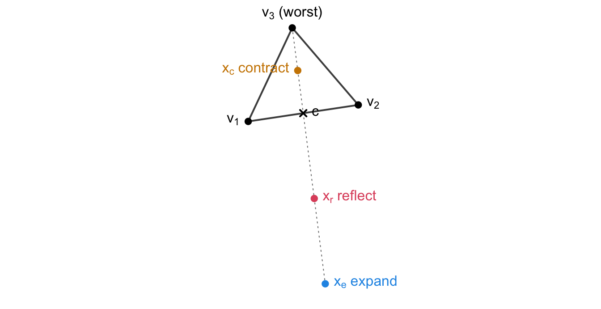
Animation for Nelder-Mead Algorithm
#| '!! shinylive warning !!': |
#| shinylive does not work in self-contained HTML documents.
#| Please set `embed-resources: false` in your metadata.
#| standalone: true
#| viewerHeight: 820
library(shiny)
## ---------------------------------------------------------------- objectives
mk <- function(label, fv, xlim, ylim, start, xstar) {
force(fv)
list(label = label, fv = fv, f = function(p) fv(p[1], p[2]),
xlim = xlim, ylim = ylim, start = start,
xstar = matrix(xstar, ncol = 2))
}
FNS <- list(
quad = mk(
"(a) Well-conditioned quadratic",
function(x, y) 0.5 * (2 * (x - 1)^2 + 1.6 * (x - 1) * (y - 1) +
2 * (y - 1)^2),
c(-3, 4), c(-3, 4), c(-2, 3), c(1, 1)
),
banana = mk(
"(b) Rosenbrock banana (narrow curved ridge)",
function(x, y) (1 - x)^2 + 100 * (y - x^2)^2,
c(-2, 2), c(-1, 3), c(-1.2, 1), c(1, 1)
),
mix = mk(
"(c) Highly correlated, two modes",
function(x, y) {
rho <- 0.9; den <- 1 - rho^2
q <- function(u, v) (u^2 - 2 * rho * u * v + v^2) / den
-log(exp(-0.5 * q(x - 1.2, y - 1.2)) +
0.6 * exp(-0.5 * q(x + 1.5, y + 1.5) / 1.5) + 1e-12)
},
c(-4, 4), c(-4, 4), c(-3, -0.5), c(1.2, 1.2)
),
himmel = mk(
"(d) Himmelblau (four global minima)",
function(x, y) (x^2 + y - 11)^2 + (x + y^2 - 7)^2,
c(-5, 5), c(-5, 5), c(-4, 4),
rbind(c(3, 2), c(-2.805118, 3.131312),
c(-3.779310, -3.283186), c(3.584428, -1.848126))
),
beale = mk(
"(e) Beale (flat plateau, sharp valley)",
function(x, y) (1.5 - x + x * y)^2 + (2.25 - x + x * y^2)^2 +
(2.625 - x + x * y^3)^2,
c(-4.5, 4.5), c(-4.5, 4.5), c(-1, 1), c(3, 0.5)
),
rastrigin = mk(
"(f) Rastrigin (many local minima)",
function(x, y) 20 + x^2 - 10 * cos(2 * pi * x) +
y^2 - 10 * cos(2 * pi * y),
c(-5.12, 5.12), c(-5.12, 5.12), c(-3.1, 4.2), c(0, 0)
)
)
## ------------------------------------------------------------- Nelder-Mead
## coefficients: reflection a, expansion g, contraction r, shrink s
run_nm <- function(FN, x0, h, a = 1, g = 2, r = 0.5, s = 0.5,
maxit = 80, tol = 1e-7) {
f <- FN$f
S <- rbind(x0, x0 + c(h, 0), x0 + c(0, h))
fS <- apply(S, 1, f)
steps <- list()
note <- "maximum number of iterations reached"
for (k in seq_len(maxit)) {
o <- order(fS); S <- S[o, , drop = FALSE]; fS <- fS[o]
dia <- max(c(sqrt(sum((S[1, ] - S[2, ])^2)),
sqrt(sum((S[1, ] - S[3, ])^2)),
sqrt(sum((S[2, ] - S[3, ])^2))))
if (dia < tol || diff(range(fS)) < 1e-12) {
steps[[k]] <- list(S = S, fS = fS, dia = dia, op = "converged",
cen = colMeans(S[1:2, , drop = FALSE]),
xr = NULL, xe = NULL, xc = NULL, Sn = S)
note <- "converged (simplex collapsed)"
break
}
cen <- colMeans(S[1:2, , drop = FALSE]) # centroid of the best two
xr <- cen + a * (cen - S[3, ]); fr <- f(xr)
xe <- NULL; xc <- NULL
Sn <- S; fn <- fS
if (fr < fS[1]) { # better than the best
xe <- cen + g * (xr - cen); fe <- f(xe)
if (fe < fr) { Sn[3, ] <- xe; fn[3] <- fe; op <- "expansion" }
else { Sn[3, ] <- xr; fn[3] <- fr; op <- "reflection" }
} else if (fr < fS[2]) { # middling: accept
Sn[3, ] <- xr; fn[3] <- fr; op <- "reflection"
} else {
if (fr < fS[3]) { # outside contraction
xc <- cen + r * (xr - cen); fc <- f(xc)
if (fc <= fr) { Sn[3, ] <- xc; fn[3] <- fc; op <- "outside contraction" }
else op <- "shrink"
} else { # inside contraction
xc <- cen + r * (S[3, ] - cen); fc <- f(xc)
if (fc < fS[3]) { Sn[3, ] <- xc; fn[3] <- fc; op <- "inside contraction" }
else op <- "shrink"
}
if (op == "shrink") {
Sn[2, ] <- S[1, ] + s * (S[2, ] - S[1, ])
Sn[3, ] <- S[1, ] + s * (S[3, ] - S[1, ])
fn[2] <- f(Sn[2, ]); fn[3] <- f(Sn[3, ])
}
}
steps[[k]] <- list(S = S, fS = fS, dia = dia, op = op, cen = cen,
xr = xr, xe = xe, xc = xc, Sn = Sn)
S <- Sn; fS <- fn
}
list(steps = steps, n = length(steps), note = note)
}
## ---------------------------- widen the data box to the device aspect ratio
expand_box <- function(xlim, ylim, pin) {
if (length(pin) != 2 || any(!is.finite(pin)) || any(pin <= 0))
return(list(xlim = xlim, ylim = ylim))
rr <- pin[1] / pin[2]
wd <- diff(xlim); ht <- diff(ylim)
if (wd / ht < rr) {
w <- ht * rr; m <- mean(xlim); xlim <- m + c(-0.5, 0.5) * w
} else {
hh <- wd / rr; m <- mean(ylim); ylim <- m + c(-0.5, 0.5) * hh
}
list(xlim = xlim, ylim = ylim)
}
COL <- c(refl = "#E8820C", exp = "#7B3FBF", con = "#1F6FB4",
new = "#2E8B57", best = "#2E8B57", worst = "#C81E1E")
## --------------------------------------------------------------------- UI
ui <- fluidPage(
fluidRow(
column(
3,
selectInput("fn", "Objective function",
setNames(names(FNS), sapply(FNS, `[[`, "label"))),
sliderInput("k", "Iteration k", min = 0, max = 1, value = 0, step = 1),
sliderInput("h", "Initial simplex size (% of range)",
min = 2, max = 40, value = 12, step = 1),
checkboxInput("showpath", "Keep past simplices", TRUE),
htmlOutput("info")
),
column(
2,
div(
style = "margin-top:26px;",
actionButton("play", "Play", class = "btn-primary btn-lg",
style = "width:100%; margin-bottom:10px;"),
actionButton("step", "Next", class = "btn-lg",
style = "width:100%; margin-bottom:10px;"),
actionButton("back", "Prev", class = "btn-lg",
style = "width:100%;"),
hr(),
checkboxInput("autoplay", "Autoplay on change", FALSE),
actionButton("reset", "Reset initial",
style = "width:100%; margin-bottom:8px;"),
helpText("Click inside the contour plot to choose a new initial value.")
)
),
column(
7,
plotOutput("contour", click = "click", height = "540px"),
plotOutput("conv", height = "190px")
)
)
)
## ----------------------------------------------------------------- server
server <- function(input, output, session) {
FN <- reactive(FNS[[input$fn]])
start <- reactiveVal(FNS[[1]]$start)
playing <- reactiveVal(FALSE)
observeEvent(input$fn, start(FNS[[input$fn]]$start))
observeEvent(input$reset, start(FN()$start))
observeEvent(input$click, {
p <- c(input$click$x, input$click$y)
if (all(is.finite(p))) start(p)
})
path <- reactive({
req(start())
FNc <- FN()
run_nm(FNc, start(), h = input$h / 100 * diff(FNc$xlim))
})
observeEvent(path(), {
updateSliderInput(session, "k", max = max(1, path()$n - 1), value = 0)
playing(isTRUE(input$autoplay) && path()$n > 1)
})
observeEvent(input$play, {
if (isTRUE(playing())) {
playing(FALSE)
} else {
if (as.integer(input$k) >= path()$n - 1)
updateSliderInput(session, "k", value = 0)
playing(TRUE)
}
})
observeEvent(playing(), {
updateActionButton(session, "play",
label = if (isTRUE(playing())) "Pause" else "Play")
})
observe({
if (!isTRUE(playing())) return()
kmax <- isolate(path()$n) - 1
k <- isolate(as.integer(input$k))
if (k >= kmax) { playing(FALSE); return() }
invalidateLater(900, session)
updateSliderInput(session, "k", value = k + 1)
})
observeEvent(input$step, {
playing(FALSE)
updateSliderInput(session, "k",
value = min(as.integer(input$k) + 1, max(0, path()$n - 1)))
})
observeEvent(input$back, {
playing(FALSE)
updateSliderInput(session, "k", value = max(as.integer(input$k) - 1, 0))
})
output$contour <- renderPlot({
FNc <- FN(); P <- path()
k <- min(as.integer(input$k), P$n - 1) + 1L
st <- P$steps[[k]]
par(mar = c(4, 4, 3, 1))
plot.new()
bx <- expand_box(FNc$xlim, FNc$ylim, par("pin"))
plot.window(xlim = bx$xlim, ylim = bx$ylim, xaxs = "i", yaxs = "i")
xs <- seq(bx$xlim[1], bx$xlim[2], length.out = 180)
ys <- seq(bx$ylim[1], bx$ylim[2], length.out = 180)
z <- outer(xs, ys, FNc$fv)
zf <- z[is.finite(z)]
lv <- unique(quantile(zf, probs = seq(0, 1, length.out = 30)^1.7))
zr <- matrix(rank(z, na.last = "keep", ties.method = "average"),
nrow = length(xs))
image(xs, ys, zr, add = TRUE,
col = colorRampPalette(c("#f7fbff", "#9ec4e3"))(128))
contour(xs, ys, z, levels = lv, add = TRUE,
col = "grey45", drawlabels = FALSE)
axis(1); axis(2); box()
title(main = paste0("Nelder-Mead | ", FNc$label),
xlab = expression(x[1]), ylab = expression(x[2]), cex.main = 1.0)
mtext(paste0("iteration ", k - 1, ": ", st$op), side = 3, line = 0.1,
cex = 1.1, font = 2)
points(FNc$xstar[, 1], FNc$xstar[, 2], pch = 8, col = "red",
cex = 1.3, lwd = 2)
## past simplices
if (isTRUE(input$showpath) && k > 1)
for (j in seq_len(k - 1))
polygon(P$steps[[j]]$S[, 1], P$steps[[j]]$S[, 2],
border = "grey55", lty = 3)
## current simplex
S <- st$S
polygon(S[, 1], S[, 2], border = "black", lwd = 2,
col = adjustcolor("white", alpha.f = 0.35))
points(st$cen[1], st$cen[2], pch = 3, col = "black", lwd = 2, cex = 1.1)
points(S[, 1], S[, 2], pch = 21, cex = 1.6, lwd = 2, bg = "white",
col = c(COL["best"], "grey30", COL["worst"]))
text(S[, 1], S[, 2], labels = c("B", "G", "W"), pos = 3, offset = 0.6,
font = 2, col = c(COL["best"], "grey30", COL["worst"]))
## candidate points generated this iteration
if (!is.null(st$xr)) {
segments(S[3, 1], S[3, 2], st$xr[1], st$xr[2],
col = COL["refl"], lwd = 2, lty = 2)
points(st$xr[1], st$xr[2], pch = 19, col = COL["refl"], cex = 1.5)
}
if (!is.null(st$xe)) {
segments(st$xr[1], st$xr[2], st$xe[1], st$xe[2],
col = COL["exp"], lwd = 2, lty = 2)
points(st$xe[1], st$xe[2], pch = 19, col = COL["exp"], cex = 1.5)
}
if (!is.null(st$xc))
points(st$xc[1], st$xc[2], pch = 19, col = COL["con"], cex = 1.5)
## the simplex that results
if (st$op != "converged") {
polygon(st$Sn[, 1], st$Sn[, 2], border = COL["new"], lwd = 3, lty = 2)
if (st$op == "shrink")
arrows(S[2:3, 1], S[2:3, 2], st$Sn[2:3, 1], st$Sn[2:3, 2],
col = COL["con"], lwd = 2, length = 0.10)
}
legend("topleft", cex = 0.85, bg = "#ffffffcc", box.col = NA,
pch = c(21, 21, 3, 19, 19, 19, NA),
lty = c(NA, NA, NA, NA, NA, NA, 2),
lwd = c(2, 2, 2, NA, NA, NA, 3),
col = c(COL["best"], COL["worst"], "black", COL["refl"],
COL["exp"], COL["con"], COL["new"]),
legend = c("best vertex B", "worst vertex W",
"centroid of B and G", "reflection", "expansion",
"contraction / shrink", "next simplex"))
})
output$conv <- renderPlot({
P <- path(); k <- min(as.integer(input$k), P$n - 1) + 1L
fb <- sapply(P$steps, function(s) s$fS[1])
fw <- sapply(P$steps, function(s) s$fS[3])
par(mar = c(4, 4.5, 1.5, 1))
matplot(seq_len(P$n) - 1, cbind(fb, fw), type = "b", pch = 20, lty = 1,
col = c(COL["best"], COL["worst"]),
xlab = "iteration k", ylab = "f at simplex vertices")
abline(v = k - 1, col = "grey60", lty = 2)
legend("topright", bty = "n", cex = 0.9, lty = 1, pch = 20,
col = c(COL["best"], COL["worst"]), legend = c("best", "worst"))
})
output$info <- renderUI({
P <- path(); k <- min(as.integer(input$k), P$n - 1) + 1L
st <- P$steps[[k]]
fmt <- function(v, d = 4) formatC(v, format = "g", digits = d)
HTML(paste0(
"<hr><b>iteration</b> ", k - 1, " of ", P$n - 1, "<br>",
"<b>operation</b>: ", st$op, "<br><br>",
"<b>B</b> = (", fmt(st$S[1, 1]), ", ", fmt(st$S[1, 2]), "), f = ",
fmt(st$fS[1], 6), "<br>",
"<b>G</b> = (", fmt(st$S[2, 1]), ", ", fmt(st$S[2, 2]), "), f = ",
fmt(st$fS[2], 6), "<br>",
"<b>W</b> = (", fmt(st$S[3, 1]), ", ", fmt(st$S[3, 2]), "), f = ",
fmt(st$fS[3], 6), "<br><br>",
"<b>simplex diameter</b> = ", fmt(st$dia), "<br>",
"<b>f range</b> = ", fmt(diff(range(st$fS))),
"<br><br><i>", P$note, "</i>"
))
})
}
shinyApp(ui, server)6 Stochastic Gradient Descent
Motivation: Large n
For iid data the log-likelihood and its gradient are sums over observations: \ell(\theta) = \sum_{i=1}^n \ell_i(\theta), \qquad \nabla\ell(\theta) = \sum_{i=1}^n \nabla\ell_i(\theta).
Every method so far needs the full gradient, an O(np) pass through all data, per iteration (and Newton needs O(np^2) for the Hessian). With n in the millions and p in the millions (neural networks), even one full gradient is expensive.
Idea. \nabla\ell_i(\theta) for a randomly chosen i is an unbiased estimate of the average gradient: E_i\big[\nabla\ell_i(\theta)\big] = \frac{1}{n}\nabla\ell(\theta).
A noisy but cheap gradient estimate is enough to make progress — a Monte Carlo idea applied to optimization.
The SGD Algorithm
For t = 1, 2, \ldots:
Sample an index i_t uniformly from \{1, \ldots, n\} (or shuffle the data and cycle through it; one pass is an epoch).
Update in the ascent direction of that single observation’s log-likelihood: \theta_{t+1} = \theta_t + \gamma_t\,\nabla\ell_{i_t}(\theta_t).
Mini-batch SGD averages the gradient over a batch B_t of m observations (m = 32–512 typical): \theta_{t+1} = \theta_t + \gamma_t\,\frac{1}{m}\sum_{i\in B_t}\nabla\ell_i(\theta_t), reducing the variance by 1/m at m times the cost, and using vectorized/GPU arithmetic.
The learning rate \gamma_t replaces the line search (a line search would need full-data evaluations).
Learning Rate and Convergence
Because the gradient is noisy, a constant \gamma makes \theta_t bounce around the optimum with variance \propto \gamma. Robbins–Monro (1951): convergence to the optimum is guaranteed if \sum_t \gamma_t = \infty \quad\text{and}\quad \sum_t \gamma_t^2 < \infty, \qquad\text{e.g. } \gamma_t = \frac{\gamma_0}{1 + t/t_0} .
\gamma too large: divergence or persistent noise. \gamma too small: painfully slow.
Convergence is only sublinear, far slower than Newton per iteration — but each iteration costs O(p) instead of O(np), and early progress is fast.
Common refinements: momentum (average past gradients), Adam (per-coordinate adaptive rates), averaging the iterates \overline\theta_T = \frac1T\sum_t\theta_t (Polyak–Ruppert), which restores the \sqrt n-efficiency of the MLE.
Animation for SGD
#| '!! shinylive warning !!': |
#| shinylive does not work in self-contained HTML documents.
#| Please set `embed-resources: false` in your metadata.
#| label: fig-sgd-animation
#| standalone: true
#| viewerHeight: 830
library(shiny)
## ------------------------------------------------------------------- data
## Two data-generating processes. The teacher network lies inside the
## student's model class; the bumps do not.
TEACH <- list(w = c(4, 3, 5), cc = c(4, 0, -5), v = c(1.0, -1.2, 0.8), b = 0)
g_teacher <- function(x) {
Hm <- tanh(outer(x, TEACH$w) + rep(TEACH$cc, each = length(x)))
as.vector(Hm %*% TEACH$v + TEACH$b)
}
g_bumps <- function(x)
1.2 * exp(-9 * (x + 0.7)^2) - 1.0 * exp(-9 * (x - 0.8)^2)
DGPS <- c("Teacher network (1 - 3 tanh - 1)" = "teacher",
"Two Gaussian bumps (outside the model class)" = "bumps")
gtrue <- function(x, dgp)
if (identical(dgp, "bumps")) g_bumps(x) else g_teacher(x)
XG <- seq(-2, 2, length.out = 300)
make_data <- function(n, sigma, seed, dgp) {
set.seed(500 + seed)
x <- sort(runif(n, -2, 2))
list(x = x, y = gtrue(x, dgp) + rnorm(n, 0, sigma), n = n, dgp = dgp)
}
## ------------------------------------------------- network: 1 - H tanh - 1
unpack <- function(p, H)
list(w = p[1:H], cc = p[H + (1:H)], v = p[2 * H + (1:H)], b = p[3 * H + 1])
fnet <- function(p, x, H) {
P <- unpack(p, H)
Hm <- tanh(outer(x, P$w) + rep(P$cc, each = length(x)))
as.vector(Hm %*% P$v + P$b)
}
gnet <- function(p, x, y, H) {
n <- length(x); P <- unpack(p, H)
Hm <- tanh(outer(x, P$w) + rep(P$cc, each = n))
r <- as.vector(Hm %*% P$v + P$b) - y
S <- (1 - Hm^2) * outer(r, P$v)
c(as.vector(colSums(S * x)) / n, # dw
as.vector(colSums(S)) / n, # dc
as.vector(crossprod(Hm, r)) / n, # dv
mean(r)) # db
}
mse <- function(p, H, x, y) 0.5 * mean((fnet(p, x, H) - y)^2)
init_p <- function(H, seed) {
set.seed(1000 + seed)
c(rnorm(H, 0, 2), rnorm(H, 0, 1.5), rnorm(H, 0, 0.7), 0)
}
## ---------------------------------------------------------------- training
## m = batch size; m >= n is full-batch gradient descent.
train <- function(p0, H, m, a, nepoch, seed, D) {
n <- D$n
m <- max(1, min(m, n))
B <- ceiling(n / m) # updates per epoch
nup <- B * nepoch
P <- matrix(NA_real_, nup + 1, length(p0))
L <- rep(NA_real_, nup + 1); EP <- rep(NA_real_, nup + 1)
IDX <- vector("list", nup + 1)
set.seed(seed)
p <- p0; k <- 0; bad <- FALSE
for (e in seq_len(nepoch)) {
perm <- if (B == 1) seq_len(n) else sample.int(n)
grp <- split(perm, ceiling(seq_len(n) / m)) # last batch may be smaller
for (b in seq_len(B)) {
k <- k + 1
idx <- grp[[b]]
P[k, ] <- p; IDX[[k]] <- idx
L[k] <- mse(p, H, D$x, D$y); EP[k] <- (k - 1) / B
p <- p - a * gnet(p, D$x[idx], D$y[idx], H)
if (any(!is.finite(p))) { bad <- TRUE; break }
}
if (bad) break
}
if (!bad) {
k <- k + 1
P[k, ] <- p; IDX[[k]] <- seq_len(n)
L[k] <- mse(p, H, D$x, D$y); EP[k] <- (k - 1) / B
}
n_rec <- max(1, k)
list(P = P[1:n_rec, , drop = FALSE], L = L[1:n_rec], EP = EP[1:n_rec],
IDX = IDX[1:n_rec], n = n_rec, B = B, m = m, diverged = bad)
}
## ------------------------------------------------------------ weight plot
## Diverging ramp: blue = negative, red = positive, magnitude by saturation.
DIV <- colorRampPalette(c("#08306B", "#2171B5", "#6BAED6", "#DEEBF7",
"#F7F7F7",
"#FEE0D2", "#FC9272", "#CB181D", "#67000D"))(201)
## compander: maps v in [-wmax, wmax] to [-1, 1], boosting small values.
tone <- function(v, wmax, k) {
u <- pmax(-1, pmin(1, v / wmax))
sign(u) * log1p(k * abs(u)) / log1p(k)
}
wcol <- function(v, wmax, k) DIV[round((tone(v, wmax, k) + 1) * 100) + 1]
wlwd <- function(v, wmax, k) 0.8 + 6 * abs(tone(v, wmax, k))
draw_net <- function(p, H, wmax, k, main) {
P <- unpack(p, H)
yh <- if (H == 1) 0.5 else seq(0.92, 0.10, length.out = H)
ix <- 0.05; hx <- 0.55; ox <- 1.05
nc <- max(1.4, min(4.4, 36 / H))
plot.new(); plot.window(c(-0.05, 1.2), c(-0.10, 1.02))
title(main = main, cex.main = 1.05)
for (j in 1:H)
segments(ix, 0.5, hx, yh[j], col = wcol(P$w[j], wmax, k),
lwd = wlwd(P$w[j], wmax, k), lend = 1)
for (j in 1:H)
segments(hx, yh[j], ox, 0.5, col = wcol(P$v[j], wmax, k),
lwd = wlwd(P$v[j], wmax, k), lend = 1)
points(ix, 0.5, pch = 21, cex = 3.2, bg = "white", lwd = 1.6)
text(ix, 0.5, "x", font = 2)
points(rep(hx, H), yh, pch = 21, cex = nc, lwd = 1.4,
bg = wcol(P$cc, wmax, k))
if (H <= 10) text(rep(hx, H), yh, 1:H, cex = 0.65)
points(ox, 0.5, pch = 21, cex = 3.4, lwd = 1.6, bg = wcol(P$b, wmax, k))
text(ox, 0.5, "y", font = 2)
## signed colour bar
xs <- seq(0.12, 0.98, length.out = 201)
rect(xs, -0.09, xs + diff(xs)[1], -0.035, col = DIV, border = NA)
lab <- formatC(wmax, format = "g", digits = 2)
text(c(0.12, 0.55, 0.98), -0.005,
c(paste0("-", lab), "0", paste0("+", lab)), cex = 0.72)
}
## --------------------------------------------------------------------- UI
ui <- fluidPage(
fluidRow(
## ---- column 1: training controls -----------------------------------
column(
3,
selectInput("dgp", "True curve", choices = DGPS, selected = "teacher"),
sliderInput("H", "Hidden neurons", min = 2, max = 16, value = 8,
step = 1),
sliderInput("m", "Batch size m", min = 1, max = 400, value = 20,
step = 1),
sliderInput("a", "Learning rate", min = 0.01, max = 0.60, value = 0.20,
step = 0.01),
sliderInput("nep", "Epochs", min = 10, max = 300, value = 100, step = 10),
sliderInput("ctr", "Weight colour contrast", min = 1, max = 40,
value = 12, step = 1),
checkboxInput("showgd", "Overlay the full-batch run", TRUE)
),
## ---- column 2: data generation, then playback ----------------------
column(
2,
div(
style = "margin-top:10px;",
tags$h5(tags$b("Data")),
sliderInput("n", "Sample size n", min = 40, max = 400, value = 200,
step = 20),
sliderInput("sigma", "Noise SD", min = 0.01, max = 0.40, value = 0.08,
step = 0.01),
actionButton("newdata", "Regenerate a dataset",
class = "btn-warning",
style = "width:100%; margin-bottom:6px;"),
hr(style = "border-top:2px solid #999; margin:14px 0;"),
tags$h5(tags$b("Training")),
actionButton("play", "Play", class = "btn-primary btn-lg",
style = "width:100%; margin-bottom:10px;"),
actionButton("step", "Next", class = "btn-lg",
style = "width:100%; margin-bottom:10px;"),
actionButton("back", "Prev", class = "btn-lg",
style = "width:100%;"),
checkboxInput("byepoch", "Advance a whole epoch", TRUE),
checkboxInput("autoplay", "Autoplay on change", FALSE),
actionButton("newinit", "New initial weights",
style = "width:100%; margin-bottom:8px;"),
actionButton("newseed", "New batch sequence",
style = "width:100%; margin-bottom:8px;"),
helpText("Both runs share the data, the initial weights and the",
"number of epochs; only m differs.")
)
),
## ---- column 3: plots -----------------------------------------------
column(
7,
plotOutput("nets", height = "300px"),
plotOutput("fit", height = "340px"),
sliderInput("k", "Update k", min = 0, max = 1, value = 0, step = 1,
width = "900px")
)
)
)
## ----------------------------------------------------------------- server
server <- function(input, output, session) {
MAXUP <- 4000
dseed <- reactiveVal(1); wseed <- reactiveVal(1); bseed <- reactiveVal(1)
playing <- reactiveVal(FALSE)
observeEvent(input$newdata, dseed(dseed() + 1))
observeEvent(input$newinit, wseed(wseed() + 1))
observeEvent(input$newseed, bseed(bseed() + 1))
observeEvent(input$n, {
updateSliderInput(session, "m", max = input$n,
value = min(input$m, input$n))
})
DAT <- reactive(make_data(input$n, input$sigma, dseed(), input$dgp))
runs <- reactive({
D <- DAT(); H <- input$H
m <- max(1, min(input$m, D$n))
B <- ceiling(D$n / m)
ne <- max(1, min(input$nep, floor(MAXUP / B)))
p0 <- init_p(H, wseed())
S <- train(p0, H, m, input$a, ne, bseed(), D)
G <- train(p0, H, D$n, input$a, ne, bseed(), D)
list(S = S, G = G, H = H, B = B, m = m, D = D, ne = ne,
capped = ne < input$nep,
wmax = max(0.2, quantile(abs(c(S$P, G$P)), 0.97, na.rm = TRUE)))
})
stride <- reactive(if (isTRUE(input$byepoch)) runs()$B else 1L)
observeEvent(runs(), {
updateSliderInput(session, "k", max = max(1, runs()$S$n - 1), value = 0)
playing(isTRUE(input$autoplay) && runs()$S$n > 1)
})
observeEvent(input$play, {
if (isTRUE(playing())) playing(FALSE)
else {
if (as.integer(input$k) >= runs()$S$n - 1)
updateSliderInput(session, "k", value = 0)
playing(TRUE)
}
})
observeEvent(playing(), {
updateActionButton(session, "play",
label = if (isTRUE(playing())) "Pause" else "Play")
})
observe({
if (!isTRUE(playing())) return()
kmax <- isolate(runs()$S$n) - 1
k <- isolate(as.integer(input$k)); st <- isolate(stride())
if (k >= kmax) { playing(FALSE); return() }
invalidateLater(250, session)
updateSliderInput(session, "k", value = min(k + st, kmax))
})
observeEvent(input$step, {
playing(FALSE)
updateSliderInput(session, "k",
value = min(as.integer(input$k) + stride(),
max(0, runs()$S$n - 1)))
})
observeEvent(input$back, {
playing(FALSE)
updateSliderInput(session, "k",
value = max(as.integer(input$k) - stride(), 0))
})
cur <- reactive({
R <- runs()
k <- min(as.integer(input$k), R$S$n - 1) + 1L
ep <- R$S$EP[k]
kg <- max(1, min(R$G$n, floor(ep) + 1L))
list(R = R, k = k, kg = kg, ep = ep)
})
output$nets <- renderPlot({
C <- cur(); R <- C$R
msz <- length(R$S$IDX[[C$k]])
par(mfrow = c(1, if (isTRUE(input$showgd)) 2 else 1), mar = c(1, 1, 3, 1))
draw_net(R$S$P[C$k, ], R$H, R$wmax, input$ctr,
sprintf("m = %d (B = %d), epoch %.2f", msz, R$B, C$ep))
if (isTRUE(input$showgd))
draw_net(R$G$P[C$kg, ], R$H, R$wmax, input$ctr,
sprintf("m = %d (full batch), epoch %d", R$D$n, C$kg - 1L))
})
output$fit <- renderPlot({
C <- cur(); R <- C$R; D <- R$D
par(mfrow = c(1, 2), mar = c(4, 4.2, 2.5, 1))
idx <- R$S$IDX[[C$k]]
plot(D$x, D$y, pch = 20, col = "grey75", cex = 0.9,
xlab = "x", ylab = "y", main = "fitted curve and current batch")
points(D$x[idx], D$y[idx], pch = 19, col = "#E8820C", cex = 1.2)
lines(XG, gtrue(XG, D$dgp), col = "red", lty = 2, lwd = 2)
lines(XG, fnet(R$S$P[C$k, ], XG, R$H), col = "#2E8B57", lwd = 2.5)
if (isTRUE(input$showgd))
lines(XG, fnet(R$G$P[C$kg, ], XG, R$H), col = "#7B3FBF", lwd = 2.5)
legend("topright", bty = "n", cex = 0.85,
lwd = c(2, 2.5, 2.5), lty = c(2, 1, 1),
col = c("red", "#2E8B57", "#7B3FBF"),
legend = c(if (identical(D$dgp, "bumps")) "true curve (bumps)"
else "teacher network",
paste0("m = ", R$m, " fit"), "full-batch fit"))
yl <- range(c(R$S$L, if (isTRUE(input$showgd)) R$G$L), na.rm = TRUE)
plot(R$S$EP, R$S$L, type = "l", log = "y", col = "#2E8B57", lwd = 2,
ylim = pmax(yl, 1e-7), xlab = "epoch (one pass over all n)",
ylab = "training loss (all n)", main = "loss per epoch")
if (isTRUE(input$showgd))
lines(R$G$EP, R$G$L, col = "#7B3FBF", lwd = 2)
abline(h = 0.5 * input$sigma^2, col = "grey55", lty = 3)
points(C$ep, R$S$L[C$k], pch = 19, col = "#E8820C", cex = 1.5)
})
output$info <- renderUI({
C <- cur(); R <- C$R; H <- R$H
P <- unpack(R$S$P[C$k, ], H)
fmt <- function(v, d = 3) formatC(v, format = "f", digits = d)
rows <- paste0(
"<tr><td>h", 1:H, "</td><td align='right'>", fmt(P$w),
"</td><td align='right'>", fmt(P$cc),
"</td><td align='right'>", fmt(P$v), "</td></tr>", collapse = "")
HTML(paste0(
"<hr><b>update</b> ", C$k - 1, " of ", R$S$n - 1,
" (epoch ", fmt(C$ep, 2), ")<br>",
"<b>batch size m</b> = ", length(R$S$IDX[[C$k]]), " of ", R$D$n, "<br>",
"<b>updates per epoch</b> = ", R$B, "<br>",
"<b>parameters</b> = ", 3 * H + 1, "<br><br>",
"<b>loss, m = ", R$m, "</b> = ", fmt(R$S$L[C$k], 5), "<br>",
"<b>loss, full batch</b> = ", fmt(R$G$L[C$kg], 5), "<br>",
"<b>noise floor</b> ≈ ", fmt(0.5 * input$sigma^2, 5), "<br>",
if (isTRUE(R$S$diverged))
"<b style='color:#C81E1E'>run diverged</b><br>" else "",
if (isTRUE(R$capped))
paste0("<i style='color:#C81E1E'>epochs capped at ", R$ne,
"</i><br>") else "",
"<br><table style='font-size:90%'>",
"<tr><th>unit</th><th>w</th><th>bias</th><th>v</th></tr>",
rows, "</table>",
"<br><i>output bias = ", fmt(P$b), "</i>"
))
})
}
shinyApp(ui, server)A Smaller Logistic Regression, for SGD
Let’s apply SGD to logistic regrression.
Code
log1pexp <- function(u) pmax(u, 0) + log1p(exp(-abs(u)))
lik_score_info <- function(b, r, z) {
u <- b[1] + b[2] * z; p <- plogis(u); w <- p * (1 - p)
list(neg_loglik = -sum(u * r - log1pexp(u)),
neg_score = -c(sum(r - p), sum(z * (r - p))),
inf = matrix(c(sum(w), sum(z * w), sum(z * w), sum(z * z * w)), 2, 2))
}
neg_logp_logistic <- function(b, z, r) { u <- b[1] + b[2] * z; -sum(u * r - log1pexp(u)) }
mle_logistic_nr <- function(b0, no_iter, r, z) {
out <- matrix(NA_real_, no_iter + 1, 3, dimnames = list(NULL, c("beta0", "beta1", "neg_loglike")))
b <- b0
for (i in seq_len(no_iter + 1)) {
q <- lik_score_info(b, r, z); out[i, ] <- c(b, q$neg_loglik)
if (i > no_iter) break
step <- tryCatch(solve(q$inf, q$neg_score), error = function(e) rep(NA_real_, 2))
if (any(!is.finite(step))) break
b <- b - step
}
out
}
set.seed(1)
n2 <- 200; z2 <- sort(runif(n2, -2, 2)); r2 <- rbinom(n2, 1, plogis(1.5 * z2))
logit_nlm <- nlm(neg_logp_logistic, c(0, 0), z = z2, r = r2, hessian = TRUE)
logit_nlm$estimate[1] -0.2725325 1.5034237Example: SGD for Logistic Regression in R
Code
sgd_logistic <- function(z, r, b0, gamma0 = 0.5, t0 = 100, epochs = 30, batch = 10) {
n <- length(z); b <- b0; t <- 0; path <- b0
for (e in 1:epochs) {
idx <- sample(n)
for (s in seq(1, n, by = batch)) {
i <- idx[s:min(s + batch - 1, n)]
t <- t + 1
u <- b[1] + b[2] * z[i]
p <- plogis(u)
grad <- c(sum(r[i] - p), sum(z[i] * (r[i] - p))) / length(i)
b <- b + gamma0 / (1 + t / t0) * grad
path <- rbind(path, b)
}
}
list(est = b, path = path)
}
set.seed(2)
beta_true2 <- c(0, 1.5)
sg <- sgd_logistic(z2, r2, c(0, 0))
rbind(sgd = sg$est, nlm = logit_nlm$estimate, truth = beta_true2) [,1] [,2]
sgd -0.2665590 1.506754
nlm -0.2725325 1.503424
truth 0.0000000 1.500000SGD Trajectory vs. Newton–Raphson

Newton–Raphson needed 7 full-data passes; SGD made 600 cheap updates over 5 epochs and lands near the MLE with residual noise.
Per data pass, Newton–Raphson is far more efficient here (n = 500, p = 3); SGD earns its keep when one full gradient — or the O(p^3) Hessian solve — is prohibitively expensive.
Summary
| needs | strength | weakness | |
|---|---|---|---|
| bisection / golden section | bracket | always converges | 1-D only, linear |
| Newton–Raphson | \nabla\ell, \nabla^2\ell | quadratic convergence, SEs from Hessian | can diverge; O(p^3) |
| Fisher scoring / IRLS | \nabla\ell, I(\theta) | positive-definite steps; GLMs | needs expectations |
| Nelder–Mead | \ell | derivative-free | slow, small p |
| gradient descent / CG / BFGS | \nabla\ell | scales to large p | line search; ill-conditioning |
| SGD | \nabla\ell_i | scales to large n and p | noisy, tuning of \gamma_t |
The log-likelihood is approximately quadratic near the MLE (asymptotic normality); every method above exploits that, and its curvature at the optimum delivers the standard errors.